从零开始学航械——飞行器技术基础图文教程（第二版）
来源：从零开始学航械 第二版.docx
目录 Каталог（上册）
一、序言&写给读者
二、绪论
三、基础前置知识
1.方块特性
2. 信号的发生、传递、接收
3.结构移动与传动
4.移动线设计综合
5.跨设备转移存档、结构
6.章末习题
四、基础模块及其进阶技术教程
1.概论
2.引擎
3.装甲
4.水管
5.电磁炮
6.蓝头武器
7.风弹武器
8.矿车矢量炮
9.导弹、舰载机
10.对地轰炸与雷区基础
第一版序言&写给读者
该教程旨在为零基础玩家提供快速上手飞行器技术（又叫绿萌，航械）的途径，以及为飞行器技术新手进一步发展与技术专研提供指导与参考。该教程涵盖了从传动系统原理到模块压缩要点的各水平的理论与实践指导，并且联合了各个技术分支的翘楚对其所钻研的领域的基础技术进行讲解，以保证其全面性与权威性。
目前飞行器技术界的教程较为零散并且完成度不尽人意，对新人寻求技术上的帮助造成一定难度。而一部较为系统性的教程对刚涉足飞行器技术的新人益处良多。在结合过往经验教训后，众人一致认为应当编纂一部系统性的飞行器技术基础教程以协助新人的技术发展与专研道路选择。于是，诞生了这本《从零开始学航械——飞行器技术基础图文教程》。
本教程是一本循序渐进的系统性教程，因此其内容的展开可能并不完全符合读者对一部飞行器技术教程的想象。但是我们相信本教程从基础技术到模块设计，由理论知识到实操规范到设计思路的进程有其独有的科学性。而我们也愿意接纳不同的意见与质疑，并将该教程做得更好。
本次教程编纂采用联合撰稿形式，由多位在自己所在领域颇有建树的飞行器技术玩家分别撰写与自己研究方向相关的教程，并交由V_Galiyanov进行修饰与统整。编者希望这种教程撰写方式可以有效解决教程完成度不高，以及教程不甚全面等问题。
本教程撰写系本人的首次尝试，如有不足，还请指正。
对那些打开了这个教程文档的朋友，有一些事情笔者需要在教程的开头点明——对飞行器技术的学习需要用脑袋，更需要自己的实践。真正正确的方法是钻研技术，而不是想着照抄别人的模块，或是希望像期末的大学生一样直接速通飞行器技术。而对于这一本教程，我希望各位读者知道——这是技术参考与理论讲解，而不是用来给大脑放假的捷径，如果玩飞行器技术只想着照抄，那不如卸载Minecraft然后躺床上睡大觉。
V_Galiyanov
第二版序言&写给读者
本书自2023年完成后，在SCO作为重要的新手参考资料，已经使用了3年之久。在此期间航械在各个领域取得重大进展。笔者及第一版的作者们均感到有必要对本书做出更新。
第二版在章节安排和内容上与第一版有所不同。笔者大幅调整了章节顺序和内容，使其更符合认知规律。
不过需要注意的是，被标注为的选修内容客观上存在一定难度，对于完全零基础的玩家而言并不友好，建议先彻底掌握必修内容后再仔细研读。
知鱼
绪论
何为飞行器技术
在Minecraft wiki中，飞行器的定义是“以粘液块/蜂蜜块为核心建造的无轨可移动装置” [1]。这个表述阐明了飞行器技术本身依赖的核心方块即粘液块与蜂蜜块，但是仍不能让人意识到飞行器技术的技术分支与本质属性。那飞行器技术是什么？这个问题得不到解决，对飞行器技术的理解就不能深入。
按照共识，飞行器技术是具有独立移动能力的红石装置。
为什么我们会对飞行器技术产生兴趣
在部分大火的航械视频的评论区中，总会有人表示：航械往往只具有单向移动的能力，毫无实用价值，论可玩性更是不如机械动力及其附属模组。或许读者一样有这种想法，但作为一名航空学与航械双修的玩家，我想告诉你的是——机械动力也好，航械也罢，他们给玩家带来的快乐是一样的，我们在规则的束缚下，让不同的方块互相偶联，让他们为自己的意识所支配最终创造出精密的作品，这种成就感让人着迷。这就是我们为什么热爱着航械。或许读者现在还不能充分理解这些话，但相信读完全书、真正成为一名航械高手后你也能领悟到航械的魅力。
航械三大基本原则
1.可移动原则。“可移动的必须实现可移动化”——蓝冰。原则上，一个飞行器必须可在进行一些操作后自主地无需玩家干涉地进行移动，否则两个泥土块也可以是飞行器，这与玩家间的共识不符。
2.生存建造原则。真正的航械必须可以在原版生存模式下复制出来，比如一个战舰上挂着一个命令方块，用结构方块作为动力源实现移动的，就不算航械。
3.生存操作原则。航械的全部模块必须能在原本生存模式下正常使用。
[1]链接：https://zh.minecraft.wiki/w/Tutorial:%E9%A3%9E%E8%A1%8C%E5%99%A8，截取时间为2025年2月27日。
基础前置知识
本章的内容很杂乱，或许对初学者并不是很友好，但请您耐心读完，因为后续的知识全部建立在这些前置知识之上。

方块特性
方块是航械技术模块的基本单位，而不同的方块有着不同的特性。清楚地了解各种方块的特性并运用不同的方块得到自己的目的，是一位合格的航械技术玩家的必备能力。在此，我们将简单介绍常被运用于绿萌模块的方块的各种性状及其所运用的领域，如果想要更深入具体地了解相应方块的性质，我们建议移步至Minecraft Wiki。
又及：方块图片取自Minecraft Wiki
基础方块
粘液块与蜂蜜块（不是蜜脾块）
：
相邻摆放的粘液块或蜂蜜块可以作为一个整体被活塞移动，移动时按照整体中所有方块的数量确定活塞的负载。
蜂蜜块和粘液块不会互相粘连。
粘液块与蜂蜜块可以带动大部分其直接接触的的方块进行移动（除了所有不可被推动的方块和带釉陶瓦）。
在基岩版，粘液块与蜂蜜块均可被充能。（什么是充能？别着急，你下一节就懂了）
蜂蜜块的体积略小于一立方米。
带釉陶瓦
：
可以被推动，但是不能被粘液块、蜂蜜块与粘性活塞拉动的方块。
带釉陶瓦可充能。
沉重核心
：
可以被推动，但是不能被粘液块、蜂蜜块与粘性活塞拉动的方块。
沉重核心不可以被充能。
沉重核心是目前唯一的不可被粘液块、蜂蜜块与粘性活塞拉动同时也不可充能的方块。
当TNT落在其所处格子内，沉重核心会吸收其全部爆炸射线使之无法破坏周围方块。
合金块（特指可移动抗炸方块）
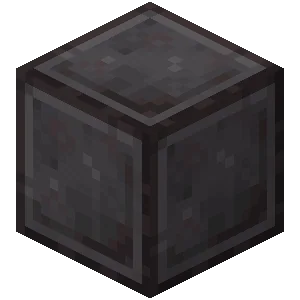
：
可被推动和拉动，并且抗TNT爆炸（不会被TNT爆炸和水晶苦力怕爆炸破坏，会被凋零射出的蓝色凋零骷髅头摧毁）。
合金块可充能，但是铁砧不可以。
楼梯
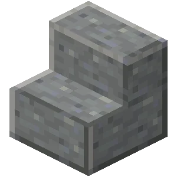
：
可以含水，但是水不会从固体面流出。碰撞体积和贴图一致。
楼梯不可充能。
台阶
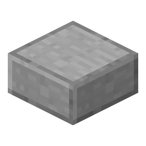
：
可以含水，但是水不会从固体面流下。
台阶的碰撞体积和贴图一致。不可充能。
下台阶可以扛下TNT在其上爆炸时所有的爆炸射线，但其自身会被爆炸破坏。
栅栏、墙
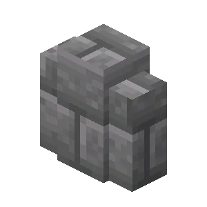
：
碰撞箱宽度小于1m。不可充能。碰撞体积大部分与贴图一致，会在方块上延伸0.5m的碰撞体积（不可阻拦方块，可以阻拦实体）
玻璃板、铁栏杆
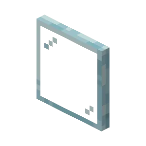
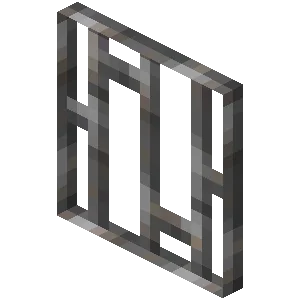
：
碰撞箱宽度小于1m。碰撞体积与贴图一致。
沙子（红纱、沙砾）
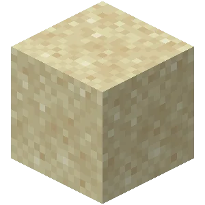
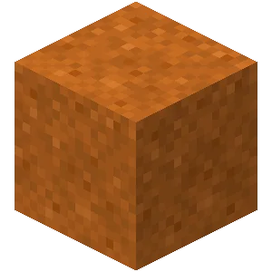
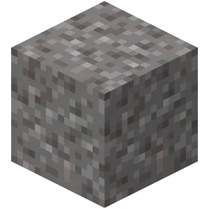
：
重力方块，在下方没有非液体方块时会变为下落的方块。
下落的方块会受到影响移动的效果如被活塞推动、被移动的粘液块弹飞、被爆炸击飞、被蜘蛛网减速、被气泡柱推动。
如果下落的方块自生成后存在了至少30秒也没有变成方块，或在建造高度外且自生成后存在了至少5秒，就会直接消失并掉落（这是伪展失效的根本原因）。
混凝土粉末
：
重力方块，在水下凝固成混凝土，常作为水面检测器。
混凝土粉末在下落时拥有与沙子一致的特性，但是在接触水面后会立刻凝固。
黑曜石（不可推动方块）
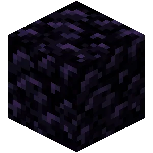
：
可以用于在结构方块转移时固定待转移结构，或用于保护某些不抗重载的结构（结构方块加载时，结构内所有观察者会激活一次，这可能导致航械损坏）。可充能（但是对于航械没什么用）。
可以通过在指定位置用水和岩浆生成黑曜石来达到阻碍飞行器前进的目的。
哭泣黑曜石与黑曜石在航械中用途完全一样。
可移动红石元件（基础）
活塞
：
可以推动不多于12个方块，在推出时本体和推出的活塞臂无法被移动。
活塞无法推出总共黏连了12个方块以上的粘液块或蜂蜜块。
活塞的推动可以使实体强制位移。
活塞本身不可充能。
活塞无法推动不可移动方块，可以推动带釉陶瓦。
粘性活塞
：
可以推动并拉回活塞臂前方一格的方块或者黏连了12个方块以下的粘液块或者蜂蜜块团。
粘性活塞的推动性质和活塞相同，拉回性质大部分和活塞位移相同，但是无法拉动带釉陶瓦。
粘性活塞本身不可充能。
观察者
：
能探测输入端（脸部）前方一格方块状态更新——能探测基本所有方块存在状态更新（如放置摧毁方块，活塞伸出拉回方块，自身被移动的时候检测前方空气）、大部分方块状态更新（如打开或关闭红石元件，打开或关闭木桶，树苗生长以及其它观察者被激活）与大部分容器内物品状态更新（如箱子增添减少物品）。在检测到方块状态更新时，会在1rt后发出时长1rt的信号，可以强充能前方的方块。（特别强调：其自身被移动时会产生信号，如果没有这个重要特性，航械可能就不存在了）（什么是rt?什么是充能？别着急，下一节你就懂了）（这里简单讲一下，rt\gt都是红石圈特有的时间单位，你可以当作类似秒、分钟的时间单位）
观察者本身不可被充能。
基岩版中，观察者不能探测到音符盒播放声音，但Java版可以；因此该特性常用于辨别某些作品来自JE或BE（这里要点名批评某些照搬JE模块的小天才）。
当观察者输入端对着一个含有物品的容器（如木桶与箱子）时，其所在的区块被重新加载时观察者会输出信号。
观察者可以探测熔炉是否在烧制过程中。
红石块
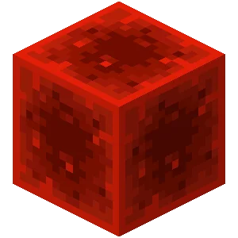
：
红石块会激活周围的红石元件。
红石块与其它红石元件同时移动时，红石元件会保持被开启的状态，例如在发射器旁边开启发射器，同时移动这两个方块后发射器不会被再次关闭开启。
阳光传感器
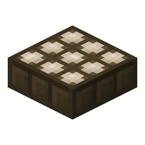
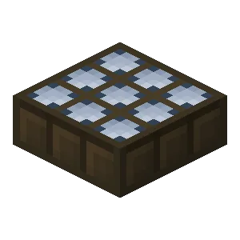
：
在夜光模式下，如果其正上方任意高度有可遮挡光芒方块（大部分的完整方块，所有除了钟以外的可充能方块）将会发出信号。
阳光传感器不可充能。
标靶
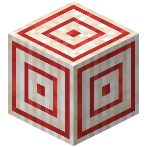
：
可以被飞行实体（如弓箭，雪球，风弹）击中，然后会发出对自身的充能。被三叉戟或箭击中时，发出持续10rt的对自身充能，但是被其他投掷物击中时信号仅持续4rt，同时要注意三叉戟或箭残留在标靶上使标靶持续发出信号。
标靶可以被充能。
讲台
：
翻动放在讲台上的书的页面时，讲台会充能自身与下方的方块持续1rt，可被用作可移动按钮。
讲台本身不可被充能。
陷阱箱
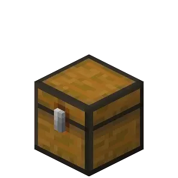
：
在被打开时会持续强充能下面的方块、弱充能周边其他方块，可用于作为移动开关
红石灯
：
在被红石信号充能或者周围有被充能的方块时，会发光持续4rt。这使得大部分高频接触红石灯也时可以使其一直发光。例如观察者对脸高频可使红石灯常亮
红石灯可被充能。
TNT方块
：
当被点燃或被激活或周围有被充能的方块被或发射器放置时，TNT会转化为TNT实体然后被给予一个方向随机的较小速度。
TNT实体在点燃40rt后爆炸。
TNT实体半径为0.98m。
基岩版的TNT爆心在受力点下方，这就是基岩版有TNT升爆特性的原因。
TNT方块不可被充能。
物品交互相关方块
漏斗
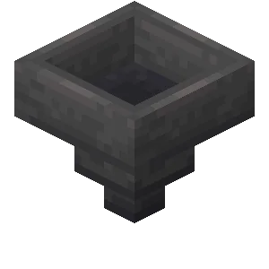
：
漏斗可以吸入处于自己上方一格内的掉落物与容器内的物品（包括处于该范围内的箱子矿车、漏斗矿车与其他的漏斗），也可以将自己的物品传输进朝向的前方一格的容器内（包括处于该范围内的箱子矿车、漏斗矿车与其他的漏斗）。漏斗横向传输物品的速率为4rt一个，竖向传输物品的速率为1rt一个。
当漏斗被激活（被弱充能）时，漏斗将无法吸入物品，也无法将自身的物品传输出去（相当于普通容器），但是此时漏斗可以被其他漏斗输入或输出物品。
对于一个向侧边的容器传输物品的漏斗，其内容物优先被下方漏斗吸走，而非被水平传输。
发射器
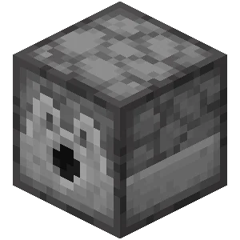
：
发射器被单次激活时会试图将自身随机的物品发射出去，无法发射的物品将会以随机的初速度和偏角以掉落物的形式投掷该物品。
不同的可发射物品被发射器发射时将会出现不同的效果，例如：雪球被发射时以一个固定的初速度飞向发射器的朝向。
正在使用打火石的发射器会在其面对的方向生成火并被其它观察者侦测到，但在没有生成火的条件（如周围没有可以让火附着的地方）时，观察者仍会侦测到发射器放置火的行为并发出脉冲。
投掷器
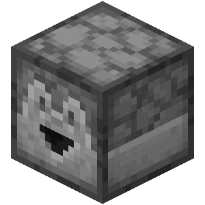
：
投掷器可以以随机的初速度和偏角以掉落物的形式投掷投掷器内的随机物品。
投掷器可以将物品直接投入容器（箱子、发射器、漏斗、熔炉或其它投掷器）
投掷器可被充能。
箱子
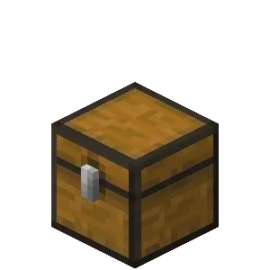
：
基础物品存放结构，当其上有可充能方块时将使得其无法被打开。
箱子常用作和观察者交互的物品存放结构。
箱子不可充能。
木桶
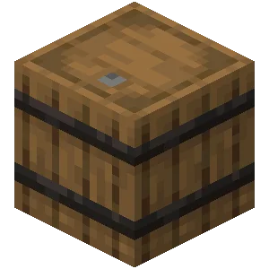
：
玩家打开或关闭木桶均可被观察者侦测。
木桶常用作和观察者交互的物品存放结构。
若木桶在打开状态（第二幅图）被移动，它将保持打开状态直到再次手动关闭木桶（这个是V_Galiyanov在摆弄他的编程引擎时偶然发现的）。
熔炉（高炉、烟熏炉）
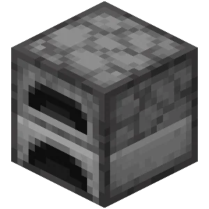
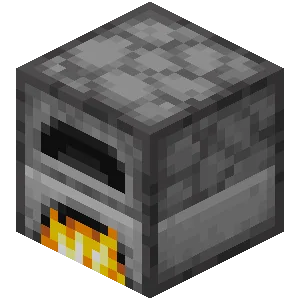
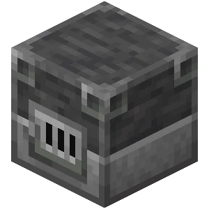
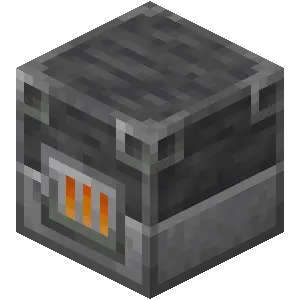
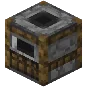
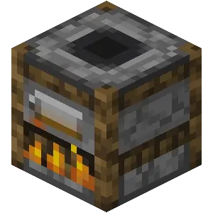
:
熔炉烧制物品需要时间，可以作为较长的延时来使用，一般用于变速引擎与定时关闭系统。
熔炉在燃料开始燃烧（熔炉成为光源方块）与燃料燃烧完毕（熔炉熄灭）时可以被观察者检测。
其它方块
流体方块（水、岩浆）
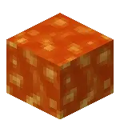
：
航械中常用于运输掉落物、TNT等实体至流动末端。
水通常被用来加速、偏转风弹。
流体方块可以使得其中的爆炸射线无法破坏方块，并大幅削减其对于实体的爆炸伤害，但是不会影响爆炸射线对于实体的推动能力，常用于炮膛内推药的归中和对于火炮的保护。
在困难模式下，经过岩浆的着火TNT爆炸会使得周围生物着火。
气泡柱
：
水方块在底部有灵魂块或岩浆块并且中间有实体水进行连接可以生成向上或者向下的气泡柱。
气泡柱可使得处于其中的大部分实体获得垂直的向上或者向下的力。
活板门
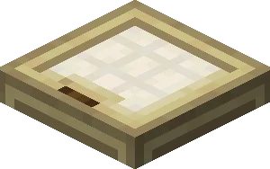
：
可以通过打开或关上改变TNT掉落于其上时所处的高度，也可以限制TNT位移后的位置。
活板门的碰撞体积和贴图一致，可以用于阻拦爆炸射线或在挡住TNT的情况下不挡住爆炸射线。
部分玩家喜欢使用一个放在观察者输入端的活板门来当信号发生器。
栅栏门
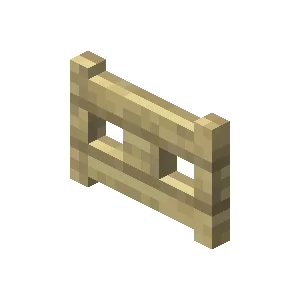
：
可以通过打开或关上改变TNT的弹道。
部分玩家喜欢使用一个放在观察者输入端的栅栏门来当信号发生器。
铁轨
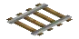
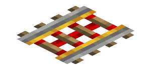
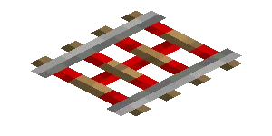
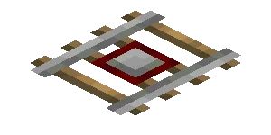
：
两个方向都有方块阻挡的铁轨在移动时，上方的矿车会随之移动。
激活铁轨（图三）可以点燃TNT矿车，在矿车炮中有巨大用途。
探测铁轨在其上有任何矿车时，会对自己和下面的方块进行持续时间为8rt的充能。
铁轨自身不可充能。
钟
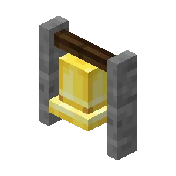
：
钟是唯一一个可移动的可被充能的不完整方块。
钟是唯一一个可移动的不会阻挡光的可被强充能方块。
同时钟是唯一一个在被激活时才能被观察者检测的方块，这个特性使其经常用于信号传递的接线。
部分玩家喜欢将钟用作与观察者交互作为基础信号发生装置。
钟在受到雪球，箭矢，火焰弹等弹射物撞击时，可以被观察者检测。
特种方块（选修）
通过各种特殊手段，我们可以在生存模式下得到一些非常规的方块，这些方块往往具有独特而强大的性能，极大地拓展了航械的上限。其制造方式比较麻烦，为节约时间，笔者建议直接在资料群寻找有关结构文件。
常态激活的讲台（别称BUG台）
：
时刻充能自身与下方的方块，可以理解为红石块+观察者的结合体。
常激活的避雷针（别称铜刷、BUG刷）
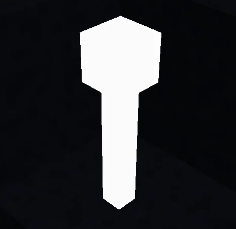
：[2]
时刻充能自身与下方的方块，可以理解为红石块+观察者的结合体。与BUG台不同的是其充能方向可以改变，这极大程度上拓展了其的可玩性，所以其比BUG台实用。
[2]获取方式：参见视频：BV1AwWxzHEGT
常态激活的铁活版门（别称BUG铁活版门）
：
保持在打开状态下的铁活版门（无需红石信号维持）。
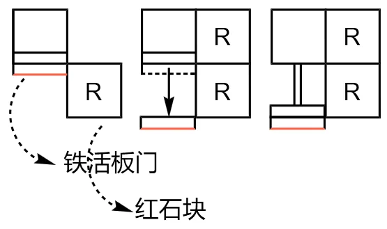
获取方式如图：（操作顺序：从左到右，视角：俯视）
信号发生、传递与接收
我们刚刚学习了航械的基本原理，但在航械技术中，移动本身只是最基础的需求，真正赋予航械灵魂的是一个个模块，想要在一个指定的区域内，操作全船全部的模块，就需要学会如何产生一个红石信号、如何远程传递信号、如何正确让模块接收型号、如何转化不同类型的信号。在本章中，我们将简单讲讲对于航械如何实现各种信号的传递。
红石信号的发生
在航械技术中，发射器发出TNT、活塞推动方块、红石灯闪烁、投掷器给容器填充物品等都需要红石信号来激活。
单次短信号的发生
首先，我们可以利用现成的可移动红石元件发生红石信号，如陷阱箱、标靶、讲台、观察者（用打火石激活其输入端）。下面将会给出各个元件的激活范围，但是因为观察者在自身移动时也会发出信号，所以该元件的时序需要特别注意以防止误触发。
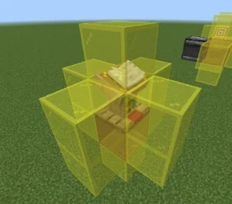
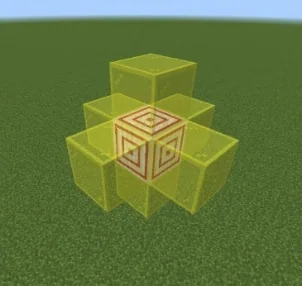
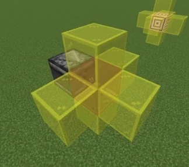
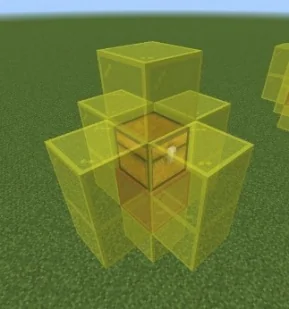
上图为标靶、观察者、陷阱箱和讲台被激活后的充能范围，红色玻璃的位置为强充能，黄色为弱充能。对于观察者，需要格外起注意移动顺序，观察者应当最先移动。具体的操作范例如下图（下图模块向右上方移动）。
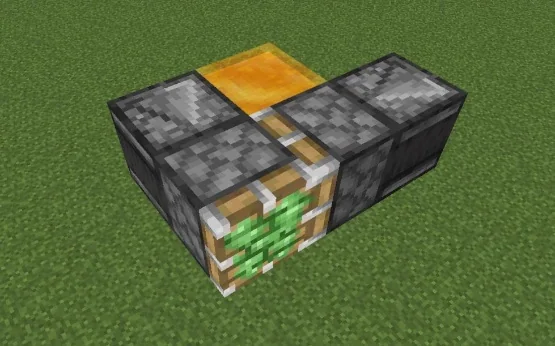
如果认为打火石不方便，或者观察者下方有方块（这会导致火焰在上面留存一段时间，造成二次触发）时，可以在观察者输入端放上诸如活板门、栅栏门、钟等方块，这样只需手动开关门或敲响钟，即可使观察者输出信号。具体情况如下图所示。
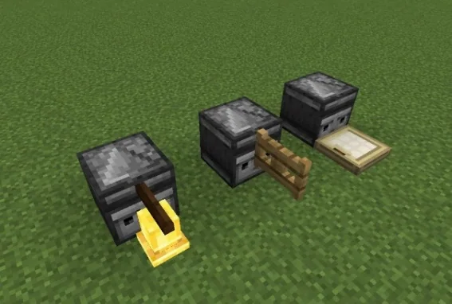
给定时长的持续性红石信号的发生
除了单次短信号之外，实际使用的飞行器技术对定时长的持续性红石信号也有需求。在一般情况下，持续性的红石信号通常需要玩家的手动调控来进行发生。这无疑是不智能而且缺乏技术的，因此用于发生定时长的持续性红石信号的定时关闭装置应运而生。
定时关闭装置虽然听起来与关闭、终止相关，但是其本质上是定时长信号的发生器。一般来说，定时关闭装置通过推拉红石块到指定位置来输出信号。对红石块的移动可以使用两个相对的活塞或是一个粘性活塞（如下组图），不同的活塞操作方式大相径庭，在下面会分别进行讲解。
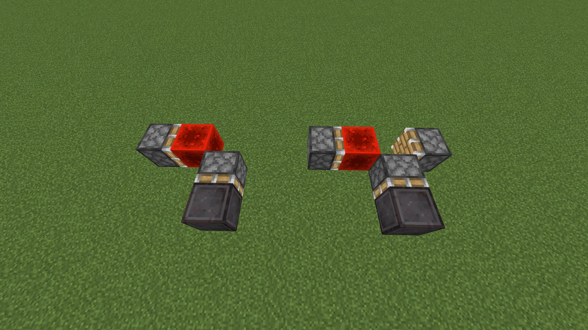
图P20-1
左边是粘性活塞，右边是两个相对的活塞
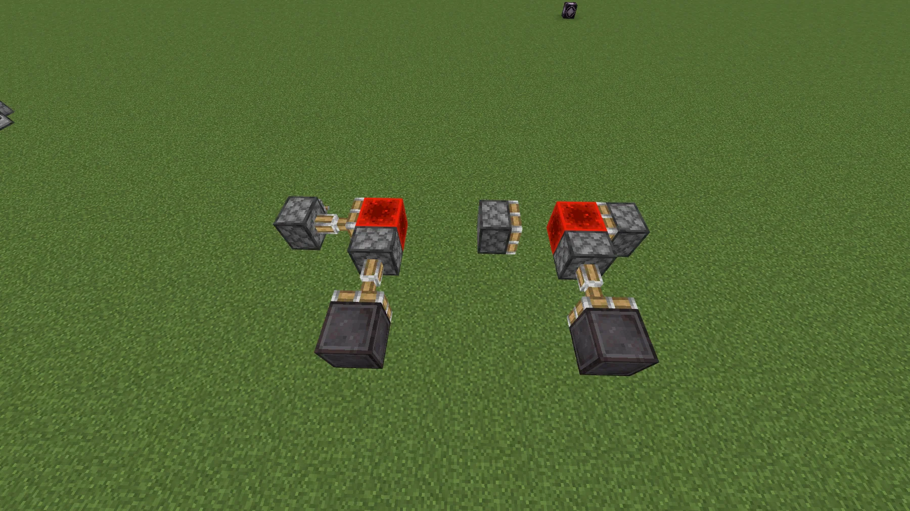
图P20-2
这是信号输出时的样子
先说使用粘性活塞的方法。在图P20-2中，发生信号时粘性活塞将红石块推出，并保持该状态直到计时完毕。在计时结束后，粘性活塞收回，红石信号停止输出。
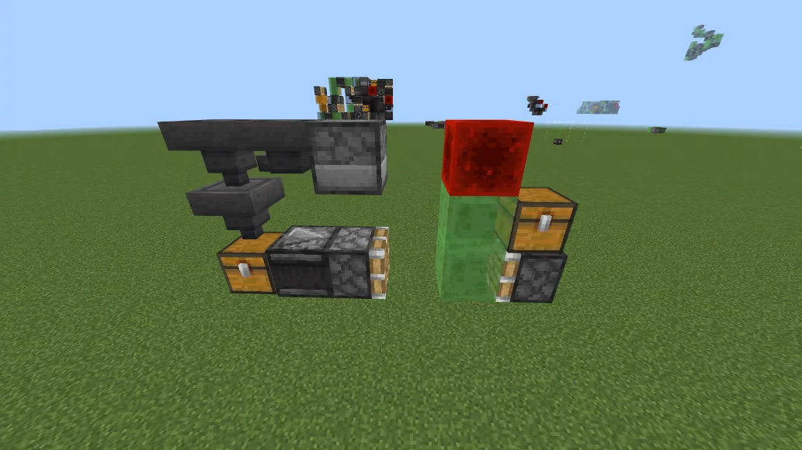
下图是一个使用单个粘性活塞的定时关闭系统，玩家通过打开陷阱箱进行计时（如右下图），在一定时间之后粘性活塞推动陷阱箱打断其红石信号输出，结束信号的发生。这种方法的缺点是计时启动之中玩家不可关闭陷阱箱，这会导致计时提前结束。
然后说使用两个活塞的方法。在图P20-2中，发生信号时活塞被短暂激活，将红石块推出并收回自身，之后一直保持该状态直到计时完毕。计时完毕后，另一个活塞推出，将红石块归位，停止红石信号的发生。
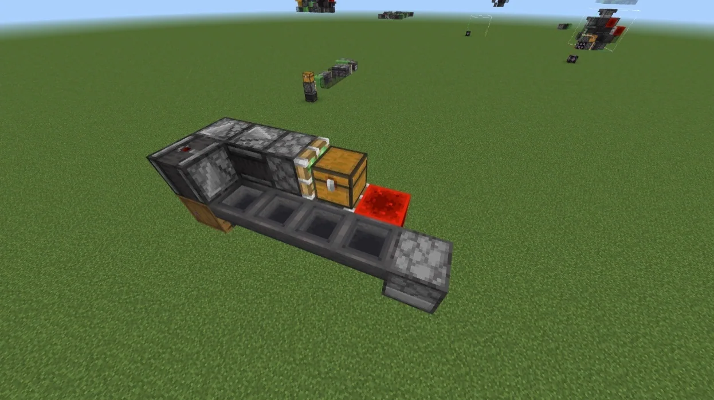
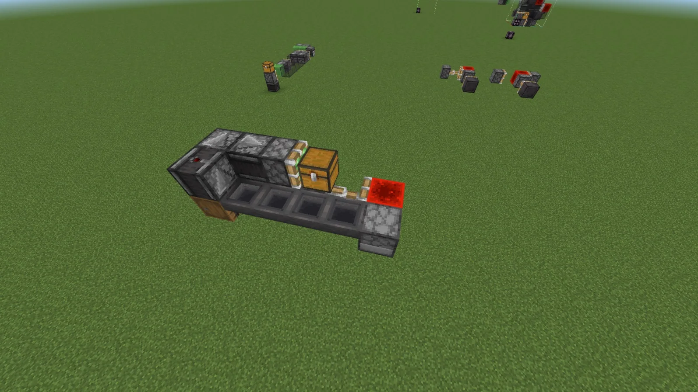
下图是一个使用两个活塞的定时关闭装置，以供玩家参考。这里需要注意，使用两个活塞时，切忌保持一个活塞长
时间推出，否则会阻碍另一个的活塞对红石块进行归位，导致红石信号无法停止发生（图中的模块在设计上杜绝了这种可能性）。
接下来有的玩家可能会问，在了解到定时关闭装置的基本原理之后，如何才能做出指定的延时效果。
一般来说，延时效果通常会使用红石信号在空间中传输时所自带的延时效果。具体可以直接跳到下面的章节进行进一步的理解。
脉冲信号的发生
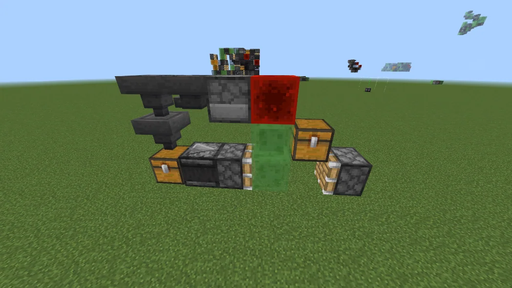
上文我们讲解的信号发生都是一次触发后发出一次信号，但是高频炮和电磁炮肯定不是操控模块的老哥疯狂点开关能做到的。因此我们要讲一下脉冲信号的发生。
在说明脉冲信号前，我们需要提点一下什么是频数，事实上，大家在聊天时听到的300频高频炮，600频高频炮所说的xxx频就是频数。频数是一种衡量脉冲频率的单位，因为单位赫兹（Hz）在测量较低频率时并不太直观，故引出单位“频数”。一般规定，频数为每分钟内的脉冲次数，如600频为每分钟发出600次脉冲，15频为每分钟15次脉冲（或每四秒一次脉冲）。
说完频数，我们来讲讲脉冲信号。在飞行器技术中，脉冲信号分三种，分别是高频脉冲、中频脉冲和低频脉冲。一般规定，频数在100频以上的是高频脉冲，介于100-15频的是中频脉冲，而小于15频的是低频脉冲。在技术上，高频脉冲需要特殊的脉冲发生方式，而中低频脉冲的发生方式拥有相同思路。
先说说高频脉冲的发生。一般来说，高频脉冲的发生方式有对脸观察者（两个观察者输入端摆在一起，互相检测对方）和机械高频。它们的结构笔者放在了下面（左下图为对脸高频，右下图为机械高频）。一般来说，对脸高频是300频，而活塞高频为150频。
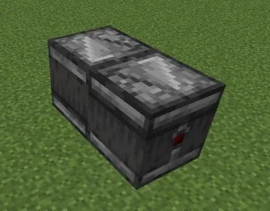
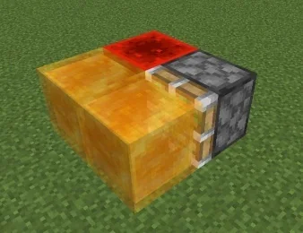
但是高频并不是只有这两种。在对频率有特殊要求的情况下，如果希望改变高频的频率（一般是降低频率），一般建议采用经过一些改动的对脸高频。改动方式为适当增加观察者数量并做些许改动，使之成为观察者环（具体情况见下图）。一般来说，观察者环中的观察者数量越多，那么脉冲的频率越低。但是有一点要注意——完整的观察者环（相对于平时不完整，只有在使用时才会完整的观察者环）在移动时会出现频率被打乱的原因，所以在使用观察者环时请务必谨慎。
但是，对于活塞，接观察者环时的频率反而高于对脸观察者。这是因为活塞无法稳定接受高于150频的频率，因此在被300频对脸观察者充能时会出现不稳定的情况，导致平均伸出频率不足150频。经过多次测试，当活塞接对脸高频时的频率大约为100频。
而说到高频，一个与之相关的概览是红石刷。红石刷是一种与高频发生器相适配的小部件，因其通过高频触发的粘性活塞带动一排粘有红石块的粘性方块来回移动，形似刷子而得名。在使用中，红石刷比其它给予发射器高频信号的方式更加便捷，而且其适用范围更大，激活效率更高，同时体积更小。左下图是一个红石刷的图片。当然，在后续章节您会见识到更高端的方案。
红石刷 中频发生器
相对于高频，中频与低频这两种信号的实现方式更加复杂，但是在实际应用中更为有用。一般来说，中低频信号有专用的“中频发生器”。这种发生器的大体结构如右上图，其原理是让物品在一个物品运输链路中不断循环，并且在固定位置被检测到物品的经过（一般通过箱子和木桶）并将其转化为红石信号。当然中频发生器的原理不止这一个，只要高频的观察者环足够长，就会变成中频甚至低频，但缺点是需要很大的体积。
红石信号的传递
一般情况，红石信号可以直接使用红石粉直接进行传递。但是在飞行器技术中，因为红石粉、红石中继器等元件因为无法被移动而被禁止出现在模块之中，红石信号的传递需要一种其他的，能经受住移动的载体来传递。因此在飞行器技术中，红石信号通常会被转化为机械信号与物品信号来进行传递，或是被转化为一些红石元件的不同状态来作为替代选项。鲜有见到直接传递红石信号的实例（但不是没有）。
通过转化为机械信号传递红石信号的方法
讲完红石信号的发生，我们来讲讲红石信号的传递。红石信号的传递有多种方式，一般是转化为机械信号、使用观察者链或者无线电。
在飞行器技术中，由于不可移动的红石元件使用受限，在大部分情况下，红石信号需要被转化为机械结构的规则移动，我们在这里称之为机械信号，而通过一些手段可以将机械信号重新转化为红石信号（但这个红石信号的产生并不是因为信号源出现，而是因为信号源在位移之后能够充能开关）。如果要让信号继续传递，将它变为机械信号后重复一次以上操作即可。为便于读者理解，上述过程我们会通过图片进行表示。
原问题 分为上下两半后
我们作为飞行器技术玩家，有义务让这个东西按照我们的想法，以一个正确的方式移动，因此我们在此有教大家将信号传输线移动化的必要。现在，让我们以左上图为例，尝试将其整个地向左移动。
正如我们所见，该信号传输线可大致分为如右上图的AB两部分，A部分在上（用青色带釉陶瓦打底），B部分在下（用灰色带釉陶瓦打底），然后分别进行移动。两个部分的划分依据很明确——仔细观察会发现，任何一部分向左移动，都不会导致另一部分误触发。按照这个分法将整个信号传输线化为两部分并分别考虑移动，可以更好地布设移动线。
在将两个部分分好之后，我们就可以进一步考量每个部分的移动了。
我们先看上面的A部分，我们可以看到粘性活塞a（下页左上图中用白桦木按钮标注）与红石块不能先于其他部分移动，否则会导致粘性活塞b（下页左上图中用诡异木按钮标注）被误触发而无法移动。所以我们应该通过技术手段同时移动活塞ab，或是让活塞b先于a移动。在这里，大家不妨用之前所学的知识自己进行思考，而解决方案在下页右上图。
被标注的活塞 解决方案
在解决完上半部分后，让我们把目光投向下半部分。在B部分中，通过观察，我们可以发现左下三个粘性活塞c、d、e（分别用黑石按钮、绯红按钮、金合欢木按钮标注）应当同时移动或按c→d→e的顺序移动，否则将会导致误触发。因为先后移动会导致复杂程度更高，所以我们可以让其同时移动，就像右下图一样。但在右下图中，活塞的负载已经到达12个方块，这使得移动最左侧的部分需要一些特殊方法——把信号传输线的用途多元化（这是可以的！）
被标注的活塞 解决方案
至于A、B部分之间的移动，我们上文说过，无论哪一方先移动，都不会对另一部分造成影响，因此我们决定先移动A，然后引出一条线连接B部分，使之移动。
好了，现在我们通过分析并完成技术实例，成功地让一个信号传输线向我们预想的方向进行移动。从上文的例子之中，我们可以总结出移动一条或多条信号传输线的诀窍——仔细辨明信号传输线在不同步移动时是否会被干扰，并给出切实的解决方案。
通过转化为物品信号传递红石信号的方法
除了机械信号，红石信号还可以被转化为物品信号。物品信号是一种以物品为载体，通过物品数量与种类的变化来承载信息的信号（仅飞行器技术）。这种转化的原理很简单——红石信号激活投掷器，投掷器投掷指定的物品，这便将红石信号转化为物品信号。
物品信号的传输方式是通过漏斗链或者箱子矿车等方式在容器间传输物品。一般来说，常见的物品信号传输方式是漏斗链（如左下图），它拥有传输速度快的优点，但是漏斗的物品传输速度使其在带宽较大时显得力不从心。因此在带宽较大时会使用漏斗矿车与箱子矿车进行传输（如右下图），相应的，这种方法传输速度较慢。
漏斗链 矿车运输
而物品信号在传输到指定容器后（期间可能包含物品分选等操作），容器内物品数量的变化会被观察者侦测到，并重新转化为红石信号。但是除非进行特殊设计，否则转化后的红石信号只有一次脉冲，而无法完全还原发生的红石信号的持续时间。
其他的红石信号传递方式
我们在上文讲了通过转化为机械信号来传递红石信号的方法，但是这并不是唯一的方法。除此之外可以采用观察者链、无线电甚至使用动力铁轨。接下来让我们讲讲实现红石信号传递的其他几种方法。
首先是观察者链。观察者链就是将观察者输入端输出端首尾相接做成的链子。在飞行器技术中，观察者链可以作为红石线的等效替代（虽然延时远大于红石线），但是其在移动后内部会有无用的信号（因为观察者移动时本身就会输出红石信号），因此在使用时要多加注意。左下图展示了一个带移动系统的横向传输信号的观察者链方案，供读者参考。但观察者链有限制其使用范围的缺点——观察者链只能传输脉冲信号，但是不能提供长时间的红石信号。
观察者链 火焰弹无线电
另外一种红石信号传输的方法是无线电，一般来说，无线电指基于投掷物实体检测的无线传输方式，不包括使用bud等方式（bud是JAVA版红石技术内容，在此不做讲解）。在实际使用中，近距离无线电较常使用弹道稳定的雪球作为选定的投掷物，而远距离无线电常通过粘液块弹射火焰弹作为一个选项（如右上图）但现在更好的平替是使用风弹，相关应用会在后面出现。但同观察者链一样，无线电只能传递脉冲，不能提供长时间的红石信号。
至于使用动力铁轨的方法，是基于观察者可以侦测到动力铁轨被激活的性质。当使用动力铁轨传递红石信号时，动力铁轨激活后被观察者侦测到，然后观察者输出端激活动力铁轨，如此周而复始，直到信号被准确传输到目的地。下图是对该结构的图示。但同以上两者一样，动力铁轨只能传递脉冲，不能提供长时间的红石信号。
除此之外，还可以通过让移动的矿车触发激活铁轨，或是用流体的自然流动等方式传递红石信号。这些在此不再赘述，有望各位玩家的积极探索
红石信号传递时的延迟
在《红石信号的发生》一节中，给定时长的持续性红石信号与中低频脉冲红石信号的发生都要依靠合适的延时系统。而延时的来源则是红石信号的传递。虽然使用红石粉可以做到在短距离内零延时的红石信号传递，但是这种零延时的方法不可移动。因此在飞行器技术中，任何形式的红石信号传递都必定伴有一定的延时。虽然听起来令人不快，但是延时以及围绕其组成的延时系统成为了几乎所有飞行器技术模块必不可少的组成部分。
延时分为机械延时、漏斗链延时、观察者链延时与矿车延时等类型。这些延时都可以在《红石信号的传递》一节之中找到对应的信号传递方式，在此不再赘述。
红石信号的接收
接收红石信号很简单，但本节意在介绍一种非常重要的特殊装置。事实上，航械中最常见的信号传递方式是标靶+雪球发射器，其它的方式相当罕见。在很多时候，我们要用到以下这个被称作T触发的特殊装置作为这种信号的接收装置，T触发可以把标靶为雪球激活而产生的信号转化为黏性活塞的动力。请尝试在游戏中搭建出该结构，并往标靶上投掷一个雪球，看看有什么结果，然后再朝标靶丢一个雪球看看有什么结果。（注：标靶右边紧邻的活塞为黏性活塞，发射器内为烈焰弹）
观察这个装置的运动过程，黏性活塞被标靶激活——活塞推出——上方观察者激活一个普通活塞的同时，黏性活塞收回（因为粘液块连结了一个正在推出的活塞，这使得整个结构都无法被移动！黏性活塞收回而粘液块连接的部分被留下）——观察者环装置以下界合金块为介质传递了信号，烈焰弹发射器被不断激活。
这种结构是最为经典的把脉冲红石信号转化为稳定红石信号（这个说法也不完全精确）的方式。想在战舰上靠一个讲台翻页就让主炮一直开火？那你有99%的概率需要在模块上设计一个T触发装置。
结构的移动与传动
在历经了这么多的铺垫后，我们终于可以向你正式介绍航械的专业知识了。航械在移动时的原理和汽车别无二致，发动机提供原始动力、传动轴传导动力。我们将学习如何建造航械的引擎与设计传动装置，这是航械中最重要的基本功。
引擎的基本原理
航械航械，顾名思义，我们需要想办法让这东西自己动起来，可以先从最简单的航械模块——常速引擎（又被叫做活塞虫、活塞飞行器）入手研究。
在Minecraft 中，引擎本质上是一种“左脚踩右脚上天”的模块。。无论是两个 活塞推动、两个粘性活塞拉动，还是使用最简单的六个方块的引擎，它们移动 的原理都是如此。
这是一个最简单的常速引擎（如上图），它由活塞、粘性活塞、两个观察者和两个粘 液块组成。对飞行器来说，“飞行”意思就是推动方块向某一个方向进行移动。 由此飞行器有单向、双向、四向之分，而这个机器能推动方块单向移动。 而飞行器是如何工作的呢？其实就是让这台机器的每一部分都执行“向前走”的逻辑。如下图所示，我们首先用打火石点火给观察者一个红石信号（该材质包中，观察者在输出红石信号时变红）
活塞被激活后，活塞臂向右伸出。于是飞行器的右半部分被向前（右侧）推进了一格，因为观察者自身被移动时，会产生一个信号（参见《方块特性》一节），故它充能右侧粘液块，激活粘性活塞，使之回收左半部分（如下图）。
活塞收回后，整个装置便会重新变为下图的状态。
我们发现，这就和第二张图片（也就是刚刚用打火石激活时）状态完全一致。也就是说其会不断重复这个过程，在不断的重复中，其会不断相对地面向前移动。 当然，这个装置如同吃了炫迈——根本停不下来。在搞懂基本原理后，我们会在后续章节向您介绍如何制造一个可以设定什么时候停下乃至有更复杂功能的引擎，但现在您不用过于纠结。
传动的基本方法——推驱、拉驱
一个车子空有发动机，没有结构连接它和轮胎，那么这辆车将无法前进，航械亦是如此，所有动力源自一个引擎而本节将教你如何把动力传导到目的地。
请看如下问题：我们想要移动右边的结构，左边是前文的引擎装置。请在这停留一下，花几十秒思考一下怎样把动力传递过去。
答案很简单，我们可以这样：
（思考：蛙明灯处的方块可不可以换成粘液块？为什么？）
（思考：可不可以这样传动？为什么？）
当独立制作出上面的结构或者和上面类似的结构后，恭喜你，你制作出了航械最基础的传动结构——推驱。像这样，利用活塞沿运动方向“推着”结构前进的传动机构被称作推驱。
推驱还有一种经典的方法——利用红石块而非观察者作为信号源实现推驱：
那么再看接下来这个问题：我们想要移动左边的结构，右边是前文的引擎装置。
用我们刚刚学的知识，我们可以用推驱实现对该结构的移动，你可以试着不用黏性活塞制作一个传动装置。但这样并不是最优解，那么：请花几十秒思考一下怎样利用黏性活塞把动力传递过去。
这应该也不会是个难题，答案如下：
像这样，利用活塞沿运动方向“拉着”结构前进的传动机构被称作拉驱。
这两种传动方式一般在一台航械内的传动装置（别称移动线路、移动线）中占了99%甚至100%。想要独立建造航械必须极度熟练地掌握这两种技术。
时序概念初步
时序，指不同事件发生的逻辑顺序与时间关系。打个比方，一个人要从冰箱中拿出冷藏的可乐并打开易拉罐喝掉，涉及的动作有：打开冰箱门、拿起可乐、打开易拉罐、饮用，那么，很显然，这个人不能先穿透冰箱门打开易拉罐，再打开冰箱门并拿起可乐喝掉。这种思想在航械中亦是基础且重要的。
看下面这个例子：如何向右移动图示结构？
结合前面内容，我们很容易想到：用拉驱移动粘液块部分，用推驱移动蜂蜜块部分。
（注：蛙明灯为动力输入点）
那么，颠倒这个顺序，让活塞先推蜂蜜块部分，再拉粘液块部分可否行得通呢？答案是否定的，活塞需要一次性推24个方块！这就是控制时序的重要性！
易水器
水、岩浆是无法被活塞移动的，同时，部分模块必须用上水流，最简单的实现间接移动水的方式是用陷阱箱先收水，在移动完成后手动打开放出水，但面对大型战舰动辄存在二三十个需要移动水的位点时，这种方式就显得无能为力了。目前移动流体的最佳方式是使用易水器。易水器是一种通过发射器内的桶 来改变流体的状态，从而移动流体的机器。这种机器在静止状态下会放出水 源，在其被移动时，易水器会先收回水源并进行移动；移动到指定位置后便会 将水源重新放出。下图是一个简易的易水器 下面几幅图展示了易水器的工作流程，即收水——移动——放水过程。
其中，图一为移动之前有水流的情况，图二为收水步骤，图三为移动步 骤，图四为放水步骤。一般来说，易水器也能移动岩浆，因为岩浆也可以被装有一个空桶的发射器所获取。 在设计易水器的时候，我们需要注意一个十分重要的事情——在设计需要移动水的模块时，易水器一般与模块的其它部分有机结合起来，而非一些人所想的“易水器和模块其他部分分开设计”。
无时序易水器
无时序易水器，顾名思义，其结构不需要常规易水一样复杂的时序。
（注：发射器正上方、发射器正上方的右边这两格是流水；和正常易水相反其发射器内放的是水桶而不是空桶）
其原理比较复杂，大致是靠无时序易水装置移动后放出水，让整个装置构成无限水，再回收水实现易水。这种结构在很多时候能降低设计易水的难度（特别是对初学者而言）
其还有种独特优势是其可以实现大面积移动水。比如下图的水甲战舰就是靠无时序易水实现对大面积水的移动的。
一般生物等实体的移动
一般的生物、实体移动很简单，一般选择让生物坐在矿车/船上。凋零蓝头（其的特性和应用很快你就会学到）直接通过活塞推动即可。
凋零的移动
凋零的基础机制非常复杂，想稳定地移动需要克服诸多困难，但目前已经有人实现。但涉及的部分前置知识、实现方式已经远远超出本书的要求范围。故在此不做介绍。
进阶传动技术（选修）
想要进一步提升自己的航械技术，就需要掌握本小节内容。这些进阶技巧在很多时候无法用推驱、拉驱替代。
半动机
半动机是相对于“永动机”，即绿萌飞行器（但是现在很少人用永动机称呼绿萌飞行器）的一个术语。不同于普通绿萌飞行器一次触发后可以一直向前移动，半动机在触发一次后只能在前进指定的距离（一般是1m）后停止前进，于原地等待下一次触发。这个特性使其广泛运用于传动系统与对模块进行短距离移动测试之中。
下图是一个经典的半动机的架构，当遮光玻璃前进，观察者激活后，整个半动机会向前移动1m。半动机用途广泛。一般来说，半动机被广泛地用于小体积模块的压缩。
在一些情况下，半动机会被用在导弹的推进部分，只要替换或增加某些方块，它就可以成为一个小型飞行器，带动弹头飞向目标。比如这样：
（正常情况下，其只是一个复杂点的传动轴，但把蛙明灯换位一个向左的观察者，用打火石点燃，其就会自行脱离主体前进）
这样一看，不难发现，半动机本质上是引擎的衍生，很多时候一个半动机只需略微更改就会成为一个引擎
在某些压缩程度极高的模块上，半动机不但被广泛运用，而且其体积也会被压缩。与此同时，玩家也通过改变半动机的结构使之得以更好地融入模块，甚至出现类似于如下图的“无粘半动机”这样令人瞠目结舌的设计。
限制性子引擎
限制性子引擎是一种很少被提及的传动方式，因为一般用不上，而且有更好的平替选项。因此这种传动方式目前仍没有一个令各方满意的名称。限制性子引擎的原理很简单——在结构内造一个小型飞行器，移动时小型 飞行器被激活并向前飞去，在指定位置被挡住而停下。等到外部结构移动一定 距离后该飞行器被重新激活，继续向前移动。 下图提供了一个简单的限制性子引擎方案供参考，左图是移动前的状态
而右图为移动后状态，在外部模块移动1b时，子引擎移动了4b。
信号传递——动力传递装置
在某些压缩度高的中央控制、中央编程战舰与物电模块中，有着对正向信号传递的需求，因此诞生了一些既可以直接移动，又可以传递信号的线路。而下图分别是无耗材式可堆叠正向信号传递线（上）与耗材式可堆叠正向信号传递线的 图片（下）（无耗材的信号传输运用了观察者可侦测发射器发射物品的特性）。
对于以上正向传输信号的方式，有些人可能会对无耗材式的实现方法感到疑惑，无耗材的信号传输运用了移动前与移动后快速激活发射器，观察者无法检测发射器被激活的特性，以及发射器被激活可以被观察者检测的性质。
吞信号——动力传递装置
这个装置最初被发明的目的是在一些极端特殊的情况下，减少本级传动装置的方块数目，以控制方块数目小于等于12以使之可以被正常推动。坦诚说，笔者还从没见过具体应用到战舰上的实例。
这里提供一个例子，动手数一下就会发现右侧结构（蜂蜜块连接的部分）需要推动的方块数目大于12了，故其无法移动，而利用左边的方式处理可以使之被移动。
但是其有一个特殊而强大的作用在遥远的未来被人发掘出来了，这就需要留到后续章节讲解了。
墙推
有时候我们需要移动面积巨大且没有或是很少有特殊时序要求的物体，或是大面积需要严格同时被移动的物体，这时我们可以利用这种暴力的方式实现目的：
其核心思路是舍弃一部分压缩度换取极致的简洁性，但现在一些进阶的墙推结构并不会显得太长。所以这也是一种非常实用、省事的技巧
移动线设计综合
先前，我们已经了解了移动线的基础知识。现在有一门侧炮，本节将教你如何统筹设计移动线。
我们先来看这门侧炮，首先，我们把需要同时移动的方块用有颜色的玻璃板标记出来（同样颜色表示需要同时动，白色玻璃表示可以在任意时序被移动）（不透明方块是有特殊时序要求的位点，随后会解释）（这里垫玻璃块只是为了方便解释，熟练玩家不需要这种方法）
我们先设计需要同时移动的那几组移动线：
然后这里用钻石块、绿宝石块标记的位点是一组易水器，很明显，其需要让钻石块先动，绿宝石块后动。（右上：本组移动线单独的展示图）
这里笔者建议在设计好所有有特殊时序要求的移动线后，把周围无时序要求的部分的移动线也顺手一起做出来
然后是金块区域，这里我们注意到：橙色玻璃标记的位置需要比蓝色玻璃块标记的位置先走，否则移动时将会误触发。
正好，在这片区域后方空间很大，不妨一会做成动力输入点，这样在保证不误触发的同时为连接不同组移动线时留出了空间。
最后，我们需要把这几组移动线串联起来并把那些未连接移动线的位置处理好。（新增添的移动线尽可能使用了蜂蜜块，动力输入点为黄色陶瓦块）
那么一门火炮的移动线就这样设计完成了，先用结构方块保存，再经过检查即可正式完成整个模块的制作。本节已经解释了移动线设计的基本方法，但是想真正掌握它还是需要自己去实践。
跨设备转移存档、结构
在学习航械的过程中，肯定需要去拆解研究其他人的作品，有时候也需要你转移自己的作品到其它存档中或是分享给别人，那么如何导入导出存档、结构呢？笔者将会把处理结构、导出结构等事项一一列出。
存档、结构预处理：
- 在所有可能会在复制后移动的结构后方堵上哭泣的黑曜石或信标等不可被推动的光源方块。同时清空所有能被观察者输入端检测到的容器内的物品，如果无法清空，则敲掉观察者并在原位置用告示牌进行说明。
- 在堵完方块后，复制结构，写好结构名称，并在显眼的位置（如存档的压缩文件名上或游戏内的告示牌上）标注正确的结构名称。
- 备份世界并将复制好的结构在另外的地方放置，拆掉不可被推动的光源方块后进行检查，如果有问题重复第一步，确认一切无误后方可打包。
存档、结构打包：
Win10版操作A（打包结构文件）：
- 打开结构方块，找到“导出“选项。
- 将结构导出至指定文件夹，如果一切正常，导出的文件后缀名应当为xxx.mcstructure形式。.mcstructure文件可以在Win10版通过结构方块进行导入。
- 找到打包好的文件，将文件名命名为游戏版本+结构名称+其它信息。
Win10版操作B（打包存档文件）：
- 找到世界编辑界面，最下方有“导出世界”选项。
- 导出世界到指定文件夹，如果一切正常，导出的文件后缀名应当是xxx.mcworld形式。在下载Minecraft Win10版并且可以成功游玩后，理论上.mcworld文件可以直接双击打开，打开后直接进入游戏并自动帮你导入世界。
- 找到打包好的文件，将文件名命名为游戏版本+结构名称+其它信息。又及，对于安卓手机用户，在安装Minecraft后也可以直接开.mcworld文件，但是需要点击”用其他应用打开”并选择Minecraft打开（如果系统的文件管理做不到，可以直接在QQ进行）
手机版操作（安卓版）：
① 打开文件管理，找到路径：Android/data/com.mojang,minecraftpe/ files/games/com.mojang/minecraftWorlds，并在里面找到待转移的存档（可逐个查看世界名称文件levelname.txt文件以确定存档）。
② 将存档压缩为.zip格式，要求压缩包打开后的样式如下图所示。将文件 命名为游戏版本+结构名称+其它信息，而后缀名改为.mcworld（这个 方法是可以的）。而接下来的操作就回到了Win10版的导入教程。
存档、结构导入
.mcworld 文件： 直接打开。
.mcstructure 文件：
① 打开Win10版Minecraft，在想导入的存档中使用结构方块。
② 打开加载模式，点击导入。
③ 找到想导入的结构文件，进行导入即可。结构导入后会直接出现在右侧 的预览图中，此时放置结构即可。
针对网易版的结构导出导入操作
网易版是玩Minecraft时最不推荐游玩的一个版本，先不说其Win10版中 结构方块没有导出导入游戏结构的选项，其官方也并未告知存档文件夹位置， 并对游戏存档进行了加密（解密需要找橘猫_Sama或使用开发者平台）。这对存 档的导入与导出造成了巨大困难。如果条件允许，笔者个人建议通过花钱入正 Win10 版，或者在合适的渠道下载国际版Minecraft来进行规避。 下面是橘猫_Sama给出的网易版存档提取转换教程，希望对大家有所帮 助。网页链接：https://www.bilibili.com/read/cv21650090
针对iOS系统的存档导入导出操作
iOS 可以算作一个巨大的灾难——在正常使用时，iOS只能下载网易版 Minecraft，只有在国外的账户才能下载到国际版。同时，iOS系统难以直接通 过浏览并修改应用的文件来导入导出存档，也无法打开.mcworld文件。这些因 素综合起来，就得出了“iOS可以算作一个巨大的灾难”的结论。 但是天无绝人之路，一般来说可以尝试在电脑中下载iTools来浏览与修改 iOS 系统的文件（V_Galiyanov用iPad玩Minecraft时经常这么干），而在iOS下载的网易版Minecraft存档可以参考上面的方法提取，然后送去解密。
基础模块教程
概论
在上文中，我们简单讲解了各种方块性质、连接与传动方式以及信号发生与传递方式等等内容，想必你对航械的基本原理已经略知一二。恭喜你，你已经具备了起码是看懂后续内容的能力了。如果您没有非常充分地掌握有关内容，笔者推荐您不要着急进入本章。
本章将为您介绍目前常见的模块的作用和设计方法。
引擎
普通引擎
普通引擎是最原始，也是最简单的引擎。它通常只有简单的机械结构，只能以固定速度进行单向移动，并没有定时停止或者改变速度的功能。一般来说，普通引擎包含常速引擎、大部分的慢速引擎，以及高速引擎（高速引擎又 称1.5 倍速引擎）。
常速引擎就是最普通的一倍速引擎，这种东西单独拎出来也会被叫做“活塞 虫”或“红石车”。常速引擎一般只需要六个方块即可实现。下图是一个最简单的 普通引擎。当然，有些时候玩家会采用另外一种架构，可以看右下图
但是，一般的航械模块与结构肯定顶不住常速引擎的速度。所以我们需要 将引擎速度降下来，这就产生了慢速引擎（又叫低速引擎）。上页图片便是慢速 引擎的一个绝妙的例子——通过增加引擎移动一米所需的步骤数量来增加其运 动所需时间，以降低速度。
当然，降低速度并不是只能靠添加机械结构来实现。有些时候可以使用熔 炉与漏斗链做出更长的延时效果，这个在下面会讲到。如果玩家不满足于现阶段飞行器的速度，想要自己的飞行器飞得更快，可以考虑使用高速飞行器。高速飞行器的架构与原理较为特殊。不同于其它飞行器一个循环前进一米，为了速度最大化，高速飞行器在一个循环中前进两米。 玩家可以按照下图的高速飞行器（作者AR404）制造一个，自己理解体会。
视频链接：https://www.bilibili.com/video/BV1LQ4y1K75n
计步引擎
上面讲的不同速度的普通引擎只能提供一个基本的动力。但是这对于玩家 来说，还是不便捷——你甚至需要把它关了。与此同时，在某些对打击方位有较高要求的导弹类武器上使用追及计步模块显然愚蠢，因此人们需要一个可以在指定位置停下并且操作简便的引擎。在此之后，计步引擎应运而生。
计步引擎的实现方式是在普通引擎的基础上，在某一个单元上增加计步模 块以达到计步移动效果。被移动指定步数之后停止发出信号，使引擎停止移动。下图是笔者搓的一个普通计步模块，在投掷器内装上指定数量物品后推动最下方蜂蜜块即可。
在了解到计步引擎原理之后，我们会发现不依靠机械结构变速的变速引擎 与编程引擎也有计步功能，不过这些引擎要在后面讲了。
变速引擎
变速引擎，顾名思义，就是可以改变速度的引擎。一般来说，变速引擎的技术实现方法有这几种：机械变速引擎，漏斗链变速引擎和熔炉变速引擎。
漏斗链变速引擎是最常规的变速引擎。漏斗链变速引擎通过改变漏斗链的 长度（一般是用红石块锁死漏斗或是用活塞推走漏斗）来改变物品通过漏斗链 的路径，进而改变延时。
下图是实装在“功勋”号上的变速引擎，通过红石块锁死漏斗进行变速。更直观的有实装于“白桦”号上的JSC5-1变速计步引擎，这里是视频链接： https://www.bilibili.com/video/BV1Yt4y1C7BH
机械变速引擎是最少见的变速引擎。这是因为变速引擎在提出后，，玩家们 倾向于使用更简单的漏斗链变速引擎。但是我们仍有关于该类型引擎的记录， 如该视频所示：https://www.bilibili.com/video/BV1k84y187DB。
而熔炉变速引擎在本质上更偏向于编程引擎。一般来说，熔炉编程引擎分为两种——一种是基于物品烧制速度的两档位变速引擎，一种是基于燃料消耗 速度的更多档位变速引擎。其原理在方块特性中有讲。
编程引擎
编程引擎是编程模块的一种。编程引擎在每移动一步后发出一个指令，以 确定引擎下一步移动是在多久之后移动。同其它编程模块一样，编程引擎分为物品式编程引擎和功能式编程引擎（功能式编程引擎又叫XINY式编程引擎）。 物品式编程引擎主要依靠漏斗链，而功能式编程引擎可以依靠燃料在熔炉里的 燃烧时间不同，或是投掷物与普通物品被发射器发射后的表现不同来进行不同 的延时。下面我将会给出几个技术实例以供读者参考。
功能式编程引擎实例： https://www.bilibili.com/video/BV1M54y197AV 物品式编程引擎实例：https://www.bilibili.com/video/BV14C4y1t7RR https://www.bilibili.com/video/BV1TZ4y1v79S（该引擎采用物品分选器，不同物品代表使用熔炉或漏斗链模式）
其它引擎
在一些时候，飞行器技术玩家因为某些特殊需求，往往会制造出一些并不常见的引擎，比如无粘（粘性活塞）引擎、无察（观察者）引擎和斜向引擎等。笔者将会在下面给出一些实例以供参考。
一个无察引擎，排除了观察者因为上方流水而被错误激活导致引擎故障的干扰，多用于简易的水下飞行器。
两个无粘引擎（左图0.75倍速，右图1.2倍速），多用于高速飞行器。
一个斜向引擎，设计者伊芙-诺蕾姬，他有专门出过一期斜向引擎的视频， 视频链接：https://www.bilibili.com/video/BV1ut41137zt
装甲
装甲和移动板状物是飞行器技术玩家对朝着战舰狂飙的TNT等实体以及部 分导弹的通用防御方式。虽然现在有更高效且效果更好的高频电磁炮来对导弹 与TNT实体进行有效拦截，但装甲仍然是一种可靠、便捷且成本低廉（在纯净 生存服中的下界合金甲除外）的战舰防御方式以及一种直观的敌我标识方式。 本篇将会对各种装甲进行简单介绍。
板甲与双层板甲
最早出现的装甲是板甲。板甲是板状装甲的简称，在技术上这是一块可以 移动的大面积方块墙壁（不是游戏里的xx墙）。因为这种装甲只需要最简单的 推驱，所以被许多新人广泛采用。下图是一个简单的板甲。
当然，板甲也有其本身的缺点——多块板甲前后相接时，连接处一般使用推驱，TNT有可能从接缝处飞入；同时，板甲本身将其大多数传动机构暴露在外面，一旦传动机构被摧毁，板甲就丧失了移动能力；除此之外，板甲对导弹直接撞击的抵抗力极其有限，在被击中时形同虚设。
为弥补上述种种缺点，板甲可以通过堆叠形成双层板甲。在不使用合金等抗炸方块的情况下，双层板甲相比于单层板甲可以提升装甲的爆炸抗性，同时在一定程度上阻碍弹射物从接缝处飞入，为让读者更加直观地了解双层板甲的本质，笔者附上了一张双层板甲的图片。
无缝甲
无缝甲，顾名思义就是没有缝隙的装甲。其静止时不存在任何缝隙。因此不必担心弹射物在战斗中从接缝处 飞入，对内部结构造成破坏；同时，飞来的TNT在击中无缝甲后会从侧面滑 出，降低破坏力。在此之外，无缝甲本身的拉驱传动结构也会对导弹的破甲进 行一定程度的阻止。下图是一种普通而简易的无缝甲设计。
虽然拉驱在直观上更适合设计无缝甲，但是推驱无缝甲也不是无法实现。下图是XINY设计（随手弄的）的一种推驱无缝甲架构（可在竖向堆叠）
一般来说，推驱无缝甲是通过活塞最大可推动方块数与实际需要推动的方 块数量之间的矛盾来设计的。图中无缝甲有三个单元，在移动时，三个单元中右侧两个单元的活塞因为超过推动方块数量上限，无法推动。当最左侧的单元将无缝甲前部推出后，后面一个单元的活塞推动方块数量减少到12以下，推出第二个单元。接着推出第三个单元。
在理论上，在具有同等保护能力的前提下，推驱无缝甲的速度高于拉驱无缝甲，缝隙存在时间也相应更短，因此其效用更好。但可惜的是这种无缝甲并未获得广泛应用。
但是世界上没有牢不可破的防御，舰炮炮弹的空爆效果可以在击中无缝甲 表面之前爆炸，从而破坏其完整的表面，导致无缝甲的防护失效。此外，虽然无缝甲会对导弹的破甲有一定阻止效果，但没有特殊处理过的装甲结构是无法抵挡专门的穿甲导弹以及其他破甲武器的。因此不能盲目迷信无缝甲。
流水甲与含水甲
但是，玩家们对完全抵抗TNT爆炸的追求是没有极限的，在制造出抗爆方 块甲后，他们又发现在水中的方块可以有效抵御爆炸，于是飞行器技术玩家按照该原理设计出了水甲。
水甲分为两种，一种是流水甲，一种是含水方块甲（又称含水甲）。含水方块甲在基岩版某个版本修改含水方块特性（指的是含水方块被移动时水不会跟随移动）后设计难度大幅提升，已经淡出人们视野。因此现在的水甲多为流水甲。下图是OneES1的战舰“oneES1 Ultra”的基本外观，可以看见战舰基本被水甲覆盖。
顺带一提，在更古早的时代，推动含水方块时其不会在移动后变成无水，所以在部分古董级别的战舰上常能见到这样的装甲：
（“叛乱分子”号战舰，作者：孤胆车神）
生物护盾
随着高速蓝头武器的普及，水甲甚至是含水甲已经不是绝对安全了，其具体的穿甲原理很快你就会接触到。增加方块厚度固然可以有效反制高速武器，但是战舰体积将会膨胀数倍，这无疑是不能接受的。我们需要一种像压缩毛巾一样“泡发”的装置，其不工作时占一点体积，工作时体积直接大幅膨胀，而且还需要能像战舰一样浮起来、可以和蓝头发生碰撞。
很明显，只要堆叠矿车+恶魂，工作时用岩浆烧掉矿车，瞬间恶魂将如丢进可乐的曼妥思一样爆炸开来。
这就是生物护盾的原理。这种护盾可以快速释放、产生可观的碰撞体积以拦截高速蓝头。但缺点是不稳定，敌人的TNT如果炸掉矿车一样会误触发，同时其也会阻隔己方的蓝头武器打击敌人。
水管
概论
毫无争议的是——水管是目前最适应竞技环境的武器。其在航械对抗中的重要性不需要笔者赘述。
水管是指利用一体膛原理制造的舰炮。这里必须澄清一个误区：事实上分膛水管炮不是水管炮而是一种长得很像水管的分膛炮。它只是长得真的太像了，但其工作原理和水管是不一样的。这到很像自然界中的蟹化现象：瓷蟹外形和螃蟹相似，但其基因测序证明其和虾的亲缘更近。虽然我们叫它瓷蟹，但它本质上仍然还是只虾。后文也会习惯性地把分膛水管等多种火炮泛指为水管。
（分膛炮、分膛水管炮、水管炮侧切示意图）
水管的基本结构
这是一门一宽小水管，在完成前一章的习题中你应该也大致摸清楚了其所具有的几个关键结构：膛体、激活装置、高频装置及其控制组件、易水装置、移动线。现在请尝试着在图中找出它们。
如果是分膛水管，那么负责提供推力的那部分叫内膛，反之叫外膛。
那么，我们将围绕对水管的改进向您介绍进阶水管技术。
三/五宽水管
一个显而易见的改进方式是把水管炮的炮膛拉宽为三或五宽。
XINY架构分膛大水管
我们已经尝试用拉宽作为一个提升火力的方向，那为什么不尝试拉长膛体呢？那么，在尝试拉长膛体时我们发现：上方膛体的长度还远远达不到12格的极限，但下方的激活装置已经不堪重负了。那思路就很清晰了：我们需要想办法把激活线加长，于是就有了XINY架构。
为了解决单条粘液块无法承载更大的发射器装置的问题，XINY创造性地分开使用了2组激活装置来激活内、外膛。相应的，因为两侧式的覆盖不了全部膛体，易水装置也转移到前方。
一般采取这种结构的火炮都是分膛的。这种结构非常流行，其极大地提升了火炮的性能。
察锤
当尝试制作更宽的水管时，你会发现红石刷当激活装置可能并不是那么便捷，因为红石刷要求大面积的相同时序的移动。于是我们可以换一种激活方式——察锤。这种装置可以让底部激活线和上方膛体不同时移动，更加方便、简单，所以其在7、9、11宽水管上更常见。
因为观察者可以激活前方2格的发射器，所以我们可以直接搭两层发射器。
红石刷在黏性活塞推出、收回时都可以激活发射器，而察锤只能在黏性活塞推出时激活发射器，但其可以激活的发射器数量是红石刷的两倍，因此二者在频率相同的前提下火力相同。
察刷（选修）
一个很自然而然的想法浮现出来了——为什么不把红石刷和察锤的优势结合起来呢？那就有了这种名为察刷的结构。其的优点在于其火力是常规的结构的两倍，这为其带来了无与伦比的爆发力。
在阅读下面的文字前，请思考一下这种设计有什么致命缺陷。
一个很致命的问题——根据第一章的知识，观察者被移动后也会激活一次，那么也就是说每移动一下其都会误触发一次上面的TNT发射器。于是有了以下三种方式来解决这个问题。
米莎架构（别称二递归架构）（选修）
米莎架构是最早的实现了察刷的架构，其原理可以理解为：平常移动状态下，其像正常察锤一样被移动，工作时一组黏性活塞先把察刷抬起来贴到发射器上，另一组黏性活塞再被激活。
（事实上，米莎架构是清锋默发明的，只不过米莎使这个架构真正出名）
其缺点很致命：太大了，一些现存的采用米莎架构的火炮体积往往达到了同宽度的察锤架构的两倍以上。当然，这种架构经过反复优化也可以被控制在一个极小的体积内。
不过很明显其结构会相当复杂。
吞信号架构（选修）
Lunatic搭载的查刷架构造成了不小的轰动。（清锋默在更早之前做出了吞信号水管架构，但是其关注度有限）侦测器紧紧贴在发射器上，但为什么移动不会误触呢？这是因为设计者采用了一种历史悠久被称之为吞信号的设计。该设计的真实发明者难以考证，因为很多老船的导弹上面就是采用了这个设计。
本书前面铺垫已久的正是这种架构。其原理简单点说就是：控制察刷观察者上方的发射器，在观察者被移动后产生信号的瞬间处于移动状态，变为不可充能的MovingBlock从而巧妙地“吞”掉观察者的信号。
你不妨也照着搭建一个并移动来试试看。(移动方式：推动粘液块)
这种特殊的设计方案极大程度地压缩了察刷架构的高度，但也增加了移动线的长度。但同时，仅靠单组吞信号架构实现我们常用的单片6推力内膛十分困难。飓风系列在内膛处再次设计了一组吞信号架构以实现该功能。但其结构也相当复杂。
铜刷架构
随着版本更新，前文的铜刷作为一种非常强力的特殊方块得到了航械玩家关注，直接把上文的观察者换成激活方向朝上的铜刷，保证其像红石刷一样上下被同时移动即可解决这个头疼的问题。这种结构相当简单。
到此我们介绍了红石刷、察锤、察刷这三种激活方式。
中频内膛
当内膛激活频率降低时，外膛的TNT在被弹飞前存在一个流动的过程，这样一来会出现更多处于不同位置的TNT，被弹飞后会产生更密集的弹坑。也就是说这种设计可以变相提升火力密度。
（外膛替换为能让TNT流动更缓慢的岩浆效果更显著）
XINY凭借这种强力的武器在3V3比赛中斩获了6杀的惊人记录。
矢量内膛（选修）
我们发现，水管的TNT一般会分布在两侧但1V1时敌舰只会在一侧出现。可以100%确定的是有50%的TNT完全被浪费了。那么有没有办法让外膛的TNT偏向一侧呢？
不难想到：我们可以把内膛分割为三个小的子结构，用活版门分割开，只需要选择性地激活其中的一部分，似乎就能实现我们所想的目标了。
但实际操作后就会发现两个问题：第一，激手动打开3个内膛必定导致激活时间不一致，这导致爆炸时间不一致，导致真正推出TNT的是某一个内膛而不是矢量内膛整体；第二，角度过大，导致膛体外沿有部分TNT打不出去或是只能飞出去一小段，落在地上炸到自身亦或被水流冲回去后爆炸导致炸膛。
雨燕架构（选修）
下图展示的雨燕架构矢量内膛架构巧妙地解决了这个问题。这个方案其巧妙之处在于中间那一组内膛可以激活中间的内膛两侧内膛分割处底部的那一组发射器，并且因为活板门碰撞箱处于离对称轴近的位置，它们会进入两侧的内膛，使得3个膛的推力差距不至于那么巨大，这在一定程度上限制了矢量性，但是起码能稳定工作了。
但雨燕架构的劣势也很明显，3组T触发使其体积变的及其巨大。这个缺点是中小型战舰绝对无法接受的。
知鱼架构（选修）
基于雨燕的处理方式，知鱼对其的激活装置做出了大幅度压缩，取代了原本的三组T触发装置，最终得到了图示的架构，这种激活架构做到了几乎不增加体积。
超重型内膛技术简介（选修）
针对提升内膛装置推力的探索从未停止，这条技术路线最终产生了三个重要的产物。
Ripple-II.alpha.28型水管的内膛设计巧妙地将电磁炮内膛和水管外膛结合，下面是其切面图，相信看了此图就可以理解其是怎么衔接上这两个结构的。
其独特优势在于：仅仅用5格宽的空间使推力达到50推，换而言之，放在现在的11宽上可以实现100推力。
其劣势也比较明显。其一，结构复杂，时序不好安排，设计移动线难度偏大；其二，其难以兼容察刷、矢量内膛等新技术。
（事实上XINY在更早之前就有提出类似的结构，但Ripple-II.alpha.28是唯一一个将其应用在水管上的）
这种结构的内膛，TNT并不能保证一直在离外膛最近处引爆，这导致推力下降。雨燕基于此，在内膛后再加一组膛体，通过这组膛体的爆炸来把内膛的TNT强行压到离外膛更近处。
（事实上固定炮中早有类似结构，但雨燕是第一个实现移动化的）
XINY充分利用实体挤压的特性，制作出一种高压缩的内膛结构，这种结构体积相较于前两种而言相当小，但同时带来的内膛推力的提升相当可观。
水管面甲
水管武器极低的安装正面装甲的难度为水管能成为现行规则下综合能力最强大的武器打下了基础。


目前主要流行的形式是：流水面甲、合金面甲、混合式（合金＋流水）面甲，其典型例子如下：
末地烛引流技术
因为木头栅栏/铁活板门扛不住TNT，XINY提出的末地烛引流法取代传统的拦水装置。当然也可以像上面的流水面甲一样一步到位。
电磁炮
概论
电磁炮在目前战舰上的主要作用是依靠产生的短距离的、高密度的空爆TNT弹幕来拦截来袭的导弹、蓝头（一种特殊的实体，可以对合金造成破坏）等。目前竞技环境下，电磁炮的地位有点尴尬，因为水管产生的空爆足以拦截大部分从常见角度来袭的蓝头，而从刁钻角度来袭的蓝头普通电磁炮又难以招架。
电磁炮结构一般很脆弱，而且在开火中被摧毁极易引发殉爆且殉爆威力巨大，但这两个致命问题都得到了解决。
笔者（指XINY）研发绿萌高频电磁技术的想法来自ps的“能天使”扫射电磁 炮（网页链接：https://www.bilibili.com/video/BV16441117os ），这门炮和目前 绿萌高频电磁有一定的差别，它采用活塞运送TNT，而目前绿萌高频电磁使用水流。从这个视频，我们可以了解到实现高频电磁的方法——将电磁弹头分开保存，避免一次性发射全部。
然而，如果想在绿萌中用该视频中存储TNT方法实现高频电磁，实在过于麻烦，绿萌模块与固定模块不同，还需要考虑模块在移动时是否被误激活。因此，笔者初步设计的高频电磁样机采用的是活塞轮存储运送TNT，虽然速度慢的多，不过在移动上并不困难。而后来，活塞轮方案又被流水方案代替，即为运用水流存储运送TNT。水流运输方案的速度远高活塞轮方案，虽然逊色于ps的方案，不过最大的优势是制作极为简单。高频电磁炮不一定必须做成TNT炮，使用高频推拉的粘液块将弹头弹出去也是可以的，这种武器叫做高频电磁弹射炮，简称高频电弹。
电磁炮特殊性质
首先是多门高频电磁炮的干涉效果。正常高频电磁炮的炮弹飞行路线是笔 直的射线，但如果有两门距离很近的高频电磁炮同时开火，它们发射的TNT会 在被发射后互相干扰，TNT飞行路线会从一根射线变成无数根向正前方，左侧，右侧均匀放射的射线，因此，绿萌高频电磁炮只要有两门，就能起到发挥战舰主炮的效果。
其次，高频电磁炮的火力输出能力强悍，在短时间内能发射数量极其恐怖的TNT。经过实际测试得知，高频电磁炮持续发射十秒的TNT输出量与打击效果和正常战舰主炮持续开火一分钟以上的情况相当。笔者在服务器里面分别测试这两种炮时，运行常规战舰主炮（中频跑或半高频炮）对服务器毫无压力，而测试高频电磁炮时卡顿严重。
第三，因为没有对TNT进行归正，目前大部分（至少编者没见过那少部分）被装在战舰上的同原理火炮 并不是电磁炮，只能算绿萌高频电磁架构舰炮、空爆炮。
第四，高频电磁炮的射程与内膛的TNT数量无关。因为推进药的任务只是 将外膛TNT推离高频电磁炮以保护模块不被炸坏，即使绿萌高频电磁炮内膛推 进药数量不够也没事。而在飞行过程中，弹头会在不断的爆炸中加速，射程最远可达数百米。
第五，高频电磁炮所发射弹头爆炸在正前方20～120格具有很高的密度，可以用于拦截鞘翅、导弹，单门散射高频电磁架构炮拦截击杀中低防护鞘翅成功率百分之七十以上（在以后还会更高，因为新版本里的盔甲抗爆性降低了），拦截导弹成功率百分之百，频率为600频，是目前唯一能对鞘翅玩家进行有效打击的武器，此外，它甚至能干扰拦截中速飞行的TNT。
第六，对于使用流水运输TNT的高频电磁炮，外膛水流传送带最佳长度为 四格。同时，绿萌高频电磁炮外膛与常规可移动火炮不同，可以堆叠到两层。本来堆叠两层的目的是加快发射频率，后来发现这种做法没有显著效果也没有必要，不过对频率有一定加快效果而且增强火力所以就留下来了。左图的高频电磁炮具有双层外膛，而右图是一个水流传送带长度为四米的高频电磁炮。
电磁炮的基本结构
电磁炮也是一种典型的分膛炮，其一般由含流水的外膛、内膛组成且外膛一般布置在内膛正上方。
重甲电磁炮（选修）
为应对TNT的威胁，Searxy为电磁炮正面加装了合金装甲并巧妙地避免用脆弱的栅栏门拦住水流（不过美中不足的是外膛还是用的栅栏门拦水）。
（DB3电磁炮及其内膛细节示意图，作者：知鱼）
一种更完美的方式是用水流覆盖电磁炮的裸露部位，这类电磁炮也被归类为水甲电磁炮，也属于重甲电磁炮范畴。
（Ones1Ultra正面电磁炮（在战舰两侧）
笔者认为真正意义上的重甲电磁炮应该具有抵御高密度TNT打击并在被打击后无需修复即可开火的能力。但部分电磁炮例如叶卡251上的正面电磁炮不能完全防御住TNT，不够其也被习惯性地叫做重甲电磁炮。
正面重甲电磁炮为了防御牺牲了单个外膛的发射器数量。故为了保证有效拦截蓝头的能力，需要双层外膛，故体积飙升。其会严重挤占其它正面武器的空间，使用侧面的重甲电磁炮可以规避这个问题。
（旗帜-506工程BP型）
其次，因为其被嵌入侧面装甲，原有射界一般很小。故内膛需具备足够大的推力以产生沿轴效果（参见老版本教程）以保证射界，铁幕III就采用了吞信号察刷技术（参见1.3）。以实现此效果。
可阻断式外膛（选修）

内膛可以单独被启动，产生爆炸以弹开落在其上面的敌方的TNT。实现这个需求最浅显的思路是内、外膛独立制作2组T触发装置。但这样体积太大，于是一个更精简的思路出现了——阻断信号向外膛传播，要开火时不阻断而内膛保持常开。
钻石块旁边的黏性活塞被激活会阻断信号向上传播。而正常情况下则可以向上传递信号。这种设计可以压缩体积。
内置甲

一个浅显而直白的应对殉爆的方式是：做一个合金壳子，把电磁炮裹起来。这就是内置甲。
我们来看看盾牌座MAX正面的高射电磁炮，其后面的合金把其与2台不太重要的舰载机包单独包裹了起来。
盾牌座MAX电磁炮后面空间的照片（部分方块被移除）
我们进行殉爆测试时会发现剧烈的殉爆虽然波及了部分周边模块，但是在合金后的驾驶室毫发无损。这充分地体现了搭载内置甲的重要性，尤其是在搭载电磁炮时，请一定要配内置甲！
电磁炮的内置甲一定要完全包裹住所有角落。因为电磁炮殉爆会产生无孔不入的空爆TNT，不包好甚至有可能适得其反。
旗帜25型的殉爆测试结果
旗帜25型就是一个典型的反面教材，留了缝隙的内置甲变相加大了殉爆的破坏力。如果迫不得已，可以不建造电磁炮的底甲或是侧面装甲，这样可以尽可能地使TNT向外部空间扩散。
内嵌甲（选修）
一个很简单的道理：直接在模块内部裹上一层合金是最省面积的内置甲。但同时带来了一个问题——颠了一层合金，那就必须用观察者强充能，那么想保障火力就必须用察刷技术。在以前这个想法因为察刷结构复杂，在电磁炮上高度密集地运用极度困难而作罢，但随着常激活的避雷针的加入，这已经不再是一件难事了。
（伏龙 作者：知鱼 玻璃块表示合金）
这种设计完全免疫殉爆。安装在战舰上时也无需再单独设计内置甲。
外置高频设计（选修）
当电磁炮前面的部分结构被破坏并殉爆时，如果高频电磁的激活装置还在工作则会源源不断地产生TNT导致殉爆损害大幅上升（事实上大部分殉爆的TNT来自于此）。但如果把高频装置放置在模块正前方。TNT命中电磁炮会优先损坏高频装置，故殉爆的TNT数量会锐减，此时殉爆损害会大幅下降甚至可以忽略不计。
（电磁炮 作者：白草）
蓝头武器
零动量蓝头（静止的蓝头）
(从左到右为蓝色凋零之首、黑色凋灵之首与凋灵骷髅掉落的凋灵骷髅头颅，后俩别搞混了)
凋灵之首无视重力，会在与方块或实体碰撞时爆炸。
蓝色凋零之首（下简称“蓝头”）在被生物或由生物发射的弹射物（例如箭矢）攻击时，其速度方向将转向该生物的目视方向，速率大小将重置为1block/gt；通过这一特性操控蓝头运动状态的方法简称箭控。除蓝头外，这种方法也能控制恶魂和末影龙发射的火球及疾风人发射的风弹；在弹射物的选取上，除了箭矢之外，玩家的手动攻击，雪傀儡投掷的雪球，溺尸投掷的三叉戟，烈焰人发射的火焰弹等均可以用于箭控蓝头，若弹射物的发射者死亡，则对应的弹射物将失去箭控特性。此外，发射器发射的所有弹射物除了风弹及女巫投掷的喷溅型药水均无箭控特性。
蓝头的爆炸能破坏除了含水方块、基岩、传送框架外的绝大多数方块，甚至在无水条件下爆炸能破坏水源和流水方块；黑色凋零之首（下简称“黑头”）不能破坏硬度大于等于石头的方块，且无法被箭控故在航械中用处不大。
静止的蓝头才能被航械正常运输。而静止蓝头的生存提取已经被证明是可行的，这使得其不违反对航械的基础要求——生存建造原则。详细的提取方法是一个复杂的工程，其主要包括以下几个课题：如何让凋零停滞在固定位置？如何收集凋零蓝头？如何解决凋零随机发射的蓝头？这些问题相当复杂且和航械无关，感兴趣的读者可以翻看参考文献，本书在书末也给出了对应书籍、文献的名字。
蓝头舰载机
蓝头舰载机是指具有完成运输蓝头、发射蓝头任务能力的舰载机。首个真正意义上的蓝头舰载机是白草发明的“瑶光”。但白草当时并未意识到蓝头舰载机的消耗品本质，将瑶光设计为可重复回收的伪三向结构，并且还计划搭载配套装弹机，这样的思路在载弹密度上可能高于现在的舰载机，但是1架瑶光往复运行的过程中耗时巨大，有很长的火力真空期，这个问题在高度卡顿的真实战斗中更加严重；其还容易被蓝头击中导致瘫痪，故这种技术路线并不适应残酷的对抗环境。
但是蓝头舰载机对航械发展有极其深远的影响。蓝头这种全新的武器的出现打破了合金无敌的神话，使得航械的甲弹对抗生态更加趋于平衡。下面这张梗图便是对其的幽默却深刻的反映：
正如上文所说的，更务实的设计方案是把舰载机设计为一次性的消耗品并且尽力追求高密度化。HMIA2就是一个典型的例子：
蓝头弹匣

这种舰载机的局限性在于其非常容易在没启动时就被各种角度来袭的风弹击中而引发连续的爆炸。故知鱼开发出了低密度蓝头弹匣炮。在后续更成熟的架构中，为了防止占用正面空间，知鱼使用了向后发射再接水流偏转装置让其转大约90°再被目视偏转。注意这种技术每个发射器需要打开后又关闭，不然后面的蓝头会获得额外的速度导致其在被水流偏转时偏离原本的轨道。
但这种弹匣的实现依赖相对复杂的机械装置，储存蓝头的密度很低，目前已经完全过时，更好的方案是高密度蓝头弹匣架构。
小叶子开发出下图所示高密度蓝头弹匣架构，其的发射流程是：1.被水流向下冲刷2.经过目视偏转装置3.蓝头弹匣整体被向前推动一次，复位。
这种架构极大程度地提升了蓝头弹匣的存储密度。如果我们用 蓝头数目/总体积=储存密度 这个公式来衡量现在的各种蓝头武器会发现：目前存储密度最高的伪二向蓝头舰载机HMIA2/DMIA2的存储密度约等于0.037；低密度蓝头弹匣——弹匣IIG的储存单元的存储密度约等于0.015；然而高密度蓝头弹匣的存储密度等于4！（新版本更新已经损坏）

弹射式低速蓝头弹匣速射炮（选修）
红框为移动线，浅蓝框为弹射部分，紫色框为蓝头弹匣，黄色框为无线电控制部分（图一）。先用无线电（黄色）远程将弹射部分（浅蓝）横向移动至敌舰正前方，然后激活蓝头弹匣（紫色）使其向左移动。弹匣上的向下充能的侦测器会在弹匣到达合适位置时激活弹射用的粘性活塞，随后粘液块就会把蓝头弹射出去。
该技术可以让一大串蓝头精准命中同一个位置，且不占用战舰前半部分宝贵的空间（铿惑认为不占前方空间是所有侧发武器最核心的优势），对于纯合金防护的战舰有极高的穿深，同时不会受到等效装甲的影响，而编者认为本架构最核心的优势就是可以超视距、高精度打击，这是所有依赖箭控原理的蓝头武器所做不到的。
高速蓝头武器（选修）
高速蓝头武器基本原理（选修）

当实体（这里指的蓝头）移动速度达到一定数值后，其将具有穿透方块的能力，产生“隔山打牛”的效果。我们把这种现象叫做高速效应。这种特性可以被利用来击穿水甲等装甲。其原理参见《我的世界的底层原理》一节。
对水甲、含水甲、多层合金装甲，常规蓝头、火球武器越发显得力不从心，于是高速实体武器应运而生。但一开始的高速蓝头武器依赖实体TNT加速，结构极度复杂，并不具有实用价值。

高速武器真正的转折点在于风弹更新，风弹可以堆积，引爆后会提供推力推动实体，这是一种非常理想的提供推力的物品，其大幅度简化了推进部分。
566高速蓝头架构（选修）
566把风弹提取装置安排在一排弹匣尾部，平常弹匣中蓝头比风弹生成位置矮一格，启用这颗蓝头时,其才被活塞推上去；风弹提取装置后有一个弹射装置，把提取好的风弹弹射向前后和被抬升的蓝头碰撞；两组风弹推力不一致实现了矢量化效果。
然这是第一个真正把高速蓝头实用化的技术，但该架构的缺点也很明显——不精确，同时编写火控程序难度比较大，需要一个同时会编程和了解实体性质的人出马。第二个致命硬伤是这种结构的射界只有区区15度。

侧发高速蓝头弹匣速射炮（选修）

侧发高速蓝头弹匣速射炮，是侧发弹射式低速蓝头弹匣速射炮的改进版，二者在结构上颇为相似。
整个装置会先被侧向推到打击位置，粘液块弹射堆叠的风弹撞到蓝头上，风弹爆炸，加速蓝头。
风弹堆叠的数量可调整，造成不同的穿深，配合全自动化带来的高射速，其是一种有独到优势的技术。
目视高速蓝头武器基本原理（选修）
箭矢偏转会导致原有的速度消失使得蓝头变回低速蓝头，风弹加速装置无法实现目视偏转，但如果在目视偏转后一瞬间被加速，可以做到既有高速效果还能目视偏转，当然，加速时也会产生误差使得蓝头略微偏离目视方向。
说实话笔者认为这是一条死路，这两个要求本质是互相矛盾的，而现有的架构只不过是在二者间寻找平衡而没有真正克服这个工程悖论。
这个装置实现的具体方式是：箭靶激活时粘液活塞和普通活塞伸缩，炼药台下降箭矢与沙子掉落，由于特性蓝头会向玩家视角方向飞行，沙子引爆风弹让蓝头加速，从而达成目视+高速的效果。
反水甲蓝头武器（选修）
蓝头于空气中空爆可摧毁水/岩浆；单轮发射的实体排列：风人风弹—蓝头—蓝头—蓝头。那么，当风弹撞击装甲并爆炸，减速后方蓝头。后方蓝头相撞爆炸吞水，剩余蓝头击碎无水保护的方块。
不过当偏移角度过大可能无法破甲；效果受蓝头重载下滑影响严重；箭控气泡柱可能影响部分实体；无法击穿有更厚的水层的装甲。
风弹武器
概论
随着版本的更新，风弹这种新实体进入了航械玩家的视线。其可以弹飞蓝头。这种全新的武器颠覆了合金-蓝头对抗的平衡，并快速形成了新的风弹-合金-蓝头对抗的平衡。
实战证明，其可以压制所有裸露的标靶、中频内膛炮、一体膛炮、各种有栅栏门的非电磁类的模块、蓝头武器。
风弹可以由旋风人直接发射，也可以通过装入发射器发射，一般后者在航械上更常见。通过下图装置可以把风弹提取并转化为静止状态。但随着版本更新，图示的架构已经失效！本书后面的大量插图展示的模块也因此损坏。目前暂时无法确认这个失效问题是BUG还是故意为之。
一种目前还能正常使用的提取架构：
在得到静止风弹后可以用水流冲刷风弹让其碰到一个箭控装置并被发射向想要的方向。风弹武器的基本原理就是如此简单，但通过一些巧妙的处理可以让少量的风弹就打出强力的辅助效果。
在布局风弹机枪时建议把其隐藏进战舰内部并在正面区域设计偏转装置，因为外挂的风弹机枪非常容易被摧毁。
常规风弹机枪技术
这是一款常规风弹机枪，靠水流向前推动并被箭矢偏转。
在布局风弹机枪时建议把其隐藏进战舰内部并在正面区域设计偏转装置，因为如果外挂风弹机枪非常容易被摧毁。
双头风弹机枪
如果把风弹机枪挂在战舰两侧，当敌人出现在一侧时，真正有输出能力的只有一台。也就是说战舰耗费了两台机枪的空间，但正常情况下可以打击敌人的仅一台。为了节约正面空间，同时提升风弹机枪的真实输出能力，知鱼发明了双头风弹机枪技术。
旗帜-506工程VB型搭载的机枪
如图所示，通过把机枪横置、手动选择水流方向选择了风弹的发射方向，在两侧建造偏转装置，可以有效节约空间。同时可以巧妙利用比较难利用的中间区域。

下发风弹机枪
常规/双头风弹机枪被固定在战舰上，一般难以威胁到下发的蓝头舰载机。所以知鱼把风弹机枪做成舰载机，向下发射并从下方打击舰载机群。
目前该技术已经完全过时。
下射风弹机枪

下发风弹机枪也有局限性——其比较容易被击毁。故知鱼提出了下射风弹机枪。这种机枪把主体留在战舰上，利用岩浆块+水先把横向飞行的蓝头向下弯折，风弹随后再在地面的偏转装置上偏转。这样其的生存能力会远远强于下发式风弹机枪。
这种下射机枪只是最原始的版本，其发射器数至多只可能有两个。目前该技术已经过时。更加高效的设计是共轭机枪技术和利用前文提到的细雪提取架构制造的下射机枪技术。
共轭风弹机枪（选修）
共轭风弹是指共速度、共轨迹的风弹，这种风弹的特质就是受到如水流的偏转后不会分离。这使得共轭风弹可以经过战舰内的复杂的偏转装置，移动到不同位置的偏转装置从而大幅提升风弹武器的灵活性和降低对空间的占用。
基于骷髅箭控的共轭风弹机枪（选修）
前文提到，骷髅箭矢一样有箭控效果，我们可以利用这一点实现制造共轭风弹。但这种方案结构复杂且弹道不稳定，目前已经完全过时。
原共轭风弹机枪（选修）
传统的提取共轭风弹的方式是先使风弹共轨迹再通过各种方式共速，而本技术则反其道而行之，通过横向冲刷风弹先获取共速度而不共轨迹的风弹，再用活塞推动风弹使之共轨迹。其是目前已知的最小体积的实现共轭风弹提取的架构。更适合在中小型战舰上推广。但该方案在建造更多发射器数量的架构时体积反而更加巨大。
矿车矢量炮
矢量炮
可能有人想问，我们能否改变舰炮打击方式只有火力覆盖的现状。答案是 可以的，那就是使用矢量炮。作为一种可以“指哪打哪”的武器，高精度打击是 矢量炮存在的意义。 要了解矢量炮，首先应该了解什么是矢量。矢量，数学上又叫向量、欧几 里得向量和几何向量，英文是Vector。矢量指的是具有大小和方向的量，能进 行加减、数乘、数量积、向量积等运算。进一步的解释请看人教版《数学必修 4 (普通高中课程标准实验教科书)》第二章平面向量。 接下来我们再谈谈矢量炮。在之前的篇目中，我们知道TNT在爆炸后会给予其它TNT一个类似于现实中的“力”的，效果可以通过叠加而线性增大的，可以矢量合成的击退效果。结合高中数学“平面向量”与初中物理“力的合成”部分，我们可以知道，不同数量的TNT在不同位置引爆，可以提供不同的射程与发射 方向。一般来说，通过精密操作让推进TNT在合适的位置引爆，难度远大于通过更改TNT击退效果的矢量和。因此，矢量炮通常通过改变不同位置的推进 TNT 数量来改变打击方向，而非改变推进TNT与炮弹间的相对位置来改变打击 方向。
一般来说，矢量炮的推进TNT分别放在两个位置。为方便代入平面直角坐 标系，两个不同位置的TNT给予炮弹的击退效果互相垂直，并且单个TNT给予 的击退效果在大小上等效。因此矢量炮常用以下两种结构（这是笔者随便搓的丐版矢量炮，能不能用笔者也没试过），其中，左下图的矢量炮的TNT推进方向与游戏内xz轴重合，称为正二维矢量炮（炮圈没有该说法），而由下图的矢量炮的推进方向与xz轴有45°夹角，称为斜二维矢量炮（炮圈没有该说法）。
一般来说，矢量炮按照使用的参考系分为平面直角坐标矢量炮与极坐标矢 量炮。但是两种架构统一使用平面直角坐标矢量炮，只是极坐标矢量炮通过外接ROM或者操作者笔算（在实战中，大多数情况是操作员慢慢试错找角度）将极坐标上的点或射线（电磁矢量炮常用）在平面直角坐标系上表示出来，并通过平面直角坐标系矢量炮将点打出。
矿车矢量炮
对于航械而言，想制造出能对战舰产生足够威胁的可移动矢量火炮需要的体积可比上图大得多，对于航械这并不划算，更高效的方式是利用堆叠的矿车取代体积巨大的发射器作为提供推力的装置。这就是矿车矢量炮，简称矿矢。
打开陷阱箱，两侧激活铁轨激活TNT矿车，同时，陷阱箱激活外膛的发射器生成的TNT会作为弹头在TNT矿车爆炸时被打出去。实现矢量的方式是控制两侧两个TNT矿车的数目。
高效装填TNT矿车的方式是把TNT矿车放进潜影盒里面，然后放在漏斗上，漏斗把TNT矿车运到上方有激活铁轨的发射器中，发射器再被一个高频装置激活，吐出TNT矿车。
高倍速矿车矢量炮（选修）
前文讲了装填TNT矿车的基本逻辑，那么，如何提升火炮的装弹速度，在战斗中先发制人呢？答案是提升对着那激活铁轨吐矿车的发射器的数目，就有了这样的结构：把装填矿车的装置放置在模块后方，吐出矿车，矿车沿轨道落入内膛中
导弹与舰载机
导弹原理、发展历史与发展方向
导弹是一种利用小型飞行器向障碍物或目标区域投送方块形式的爆炸物，并在指定位置将爆炸物引爆造成破坏的武器。本质上舰载机（不包括蓝头舰载机这类特殊武器）和导弹的基本原理是类似的和区块加载与移动速度等问题使得导弹的用途一直有着限制，如何扬长避短对设计导弹尤为重要。
下图是经常被V_Galiyanov使用的“J-H1022”高频导弹（视频链接：https://www.bilibili.com/video/BV1ik4y1k7t7 ）
导弹的发展历程没有经历太大变化。最初的导弹是传统的TNT导弹，TNT方块在导弹撞上障碍物之后爆炸，造成破坏。在TNT导弹出现之后不久，威力更大的凋零导弹和高频导弹一并问世，并在2017——2018年之中得到长足发展被玩家广泛使用。其中，高频导弹的发展变化尤为明显。下面的一系列图片体现了高频导弹的演化历程，在此之中，我们可以看出游戏的更新对武器模块设计的影响。
导弹的发展趋势是功能特化、高精度打击与自动化打击，也有一种发展思路是将其结构简化，耗材量降低，并发展成为诱使敌方消耗炮弹的耗材。其中，功能特化的代表是大规模凋零定点投放器（虽然这是生物武器，但是它源 自导弹），而精准与自动化打击的代表是计步导弹与三维轰炸机。这些武器通过 编程模块的自动化控制得以进行精确的打击，或是规避密集火力与障碍物。这 种武器的战果可见2022年和2023年Minecraft新春会的飞行器技术作品，虽然是节目效果，但是依然 体现了其价值。
（作品视频链接：https://www.bilibili.com/video/BV1gb4y1J7nQ与 https://www.bilibili.com/video/BV1Zv4y1k7M1 ）
但实际上目前导弹的生态位被极大程度地压缩甚至趋于消亡。一般导弹无法突破大水管、电磁炮构成的密集防线。
普通导弹设计要点
接下来，笔者针对萌新关于导弹可能提出的问题来进行一些解答。
首先是导弹弹头与引信部分的移动问题。原则上弹头与引信同步移动，但是在一些导弹上，引信的移动可能会稍慢于弹头，这也是正常现象。
其次是引信位置与引信原理。Minecraft的导弹的引信属于现实中的弹身引 信，引信一般在弹头与推进部分之间。不同于现实中带有目标敏感装置、信号处理装置与执行装置的引信，Minecraft中的引信仅仅是是一个红石信号源。在弹头碰到障碍物无法移动时，引信继续向前移动并接触弹头，激活发射器（也可以是TNT或其他装置）使弹头被触发，造成破坏。 接下来是弹头大小。一般来说，弹头正面的投影面积（粘性方块的投影面 积是方块本体和四个面上的方块）应当完全覆盖推进部分与引信（如下图所示，示例为普通导弹）。
遮光玻璃为投影面积，原则上两部分投影面积应当相同，否则可能会出现障碍物阻挡推进部分而非弹头，导致导弹失效的问题。
多维推进装置与舰载机（选修）LASS攻底导弹（插图）
岩浆轰炸机（选修）
拒马导弹（选修）
对地轰炸与雷区基础
这两种技术目前并无太大实用价值，如果不感兴趣可以跳过。
对地轰炸基础
对地轰炸，是利用Minecraft内实体会受到重力的特性设计的，对模块下方 的目标进行打击的模块。下图是一个普通的对地轰炸模块。
轰炸是飞行器技术中最早出现的武器，也是飞行器技术中技术门槛最低，制造方式最简单的武器——最简单的不可控轰炸只需要一个发射器和一个观察者。在飞行器技术中，轰炸对于空对地打击有着重要意义。一般来说，轰炸可以按照下坠高度分为近空轰炸、普通轰炸、加力轰炸与矿车轰炸。近空轰炸利用技术手段对TNT的坠落进行阻拦，以减少TNT下落距离，的以攻击到更近处目标。普通轰炸则是直接投掷TNT攻击下方，一般作用 范围不超过模块下方128m。加力轰炸则通过外力（如TNT推动或粘液块弹 射）加速TNT，使其可以攻击到高差大于128m的目标。而矿车轰炸通过向下投掷TNT矿车，并利用TNT矿车在以一定速度接触地面后会爆炸的特性对地面目标进行攻击的轰炸；需要注意的是，这种轰炸难以做到空爆，但是向下的攻击距离是无限远的。 在设计轰炸时，我们需要注意一个事实——设计对正下方的垂直轰炸是没有必要的。因为当有反击能力的目标在对你进行打击之前不需要行驶到你的正下方，所以垂直的轰炸是没有必要采用的（上面的垂直对地轰炸只是便于读者理解）。
雷区基础
雷区是一种比较少见的武器模块，它通过布设不可移动的障碍物或是在被 移动时爆炸的结构截停敌方导弹与战舰，并为己方机动取得时间。雷区一般作为一种辅助性武器模块使用，在多数战舰中并不常见。左下图是一个向右移动的简易雷区，打开陷阱箱后活塞推出，从而布设一个雷区（如右下图）。当飞行器从左侧撞击时，发射器会被推到红石块正上方并发射一个 TNT 造成破坏。